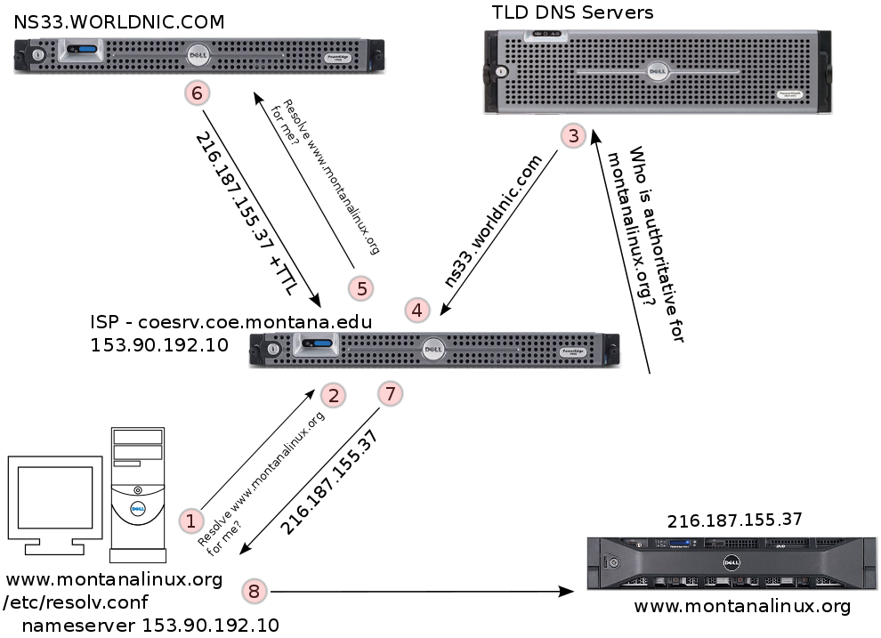

CSCI-351: System Administration
Montana State University
Spring 2021
Welcome
| Course Schedule |
|---|
| Week 4 |
| - Command Line Potpourri - Understanding File/Dir Ownership and Permissions |
| Week 5 |
| - Package Management - Processes and Resource Management |
| Week 6 |
| - Init System & Services - Backups - Network Configuration |
| Week 7 |
| - Desktop Linux - Firewalls with firewalld |
| Week 8 |
| MIDTERM |
| Week 9 |
| Lectures - System Logs & Monitoring - Automation with CRON Readings - TLCL: 14-Package Management - RHEL7 - SAG, Chapter 23, Viewing and Managing Log Files - RHEL7 - SAG, Chapter 24, Automating System Tasks Videos - Nerds 2.0.1 |
Quiz Solutions
Quiz 1
- Which distribution does CentOS derive from?
- Red Hat Enterprise Linux
- SUSE Enterprise Server
- It is one of the three top level distros
- Scientific Linux
- How does “Free Software” differ from “Open Source?”
- Open Source does not use the GPL license
- The two terms are completely interchangeable
- Free software is always free in cost
- One is about freedom and the other is about a development model
- What will typically be the default editor if the EDITOR environment variable is not set?
- edln
- emacs
- nano
- vi
- Who started the GNU Project, started the Free Software Foundation and wrote the GPL?
- Linus Torvalds
- Richard M. Stallman
- Andrew S. Tanenbaum
- Eric S. Raymond
- In what directory are global configuration files stored?
- /root
- /proc
- /dev
- /etc
- Does the root user have a home directory? (Hint: If unsure, look in
/etc/passwd)- Yes -
/var/root - Yes -
/root - Yes -
/home/root - No
- Yes -
- What makes a file or directory “hidden” from the perspective of
ls?- The dirs/files that begin with a dot (.)
- The dirs/files are marked as temporary
- Recently deleted files
- The contents of the lost+ found directory
- Which Linux distribution does Canonical’s Ubuntu derive from?
- Debian
- Slackware
- Novell
- Red Hat
- What directory contains virtual dirs and files that are a glimpse into the kernel’s brain?
- /etc
- /var/virt
- /proc
- /dev
- How many partitions can the default GPT partition table hold?
- 8
- 128
- 26
- 512
- What three Linux distributions do most other distributions derive from?
- Debian, Ubuntu and Red Hat
- Slackware, Debian and Novell
- Novell, Slackware, and Red Hat
- Debian, Red Hat and Slackware
- One fault of RAID O is…
- RAID 0 is very slow
- If any drive in the RAID goes bad, all data is lost
- It is no longer supported by vendors
- You lose too much disk space in the RAID overhead
- How many Linux distributions are there?
- 12
- About 100
- 76
- 500 or more
- Which program is used to format an existing partition with a filesystem?
- mkfs.{ fstype}
- fdisk
- fscreate
- sfdisk
- Where is the user’s encrypted password stored?
- /etc/group
- /etc/shadow
- /etc/passwd
- ~/.password
- What kind of partition lets you get past the 4 primary partition limit of MBR/ms-dos?
- Extended
- Secondary
- LBA partition
- Primary partition
- Man page section 1 contains what type of man pages?
- File formats and conventions
- System calls
- Executable programs or shell commands
- Kernel routines
- What do you type on the keyboard to start a search in the less screen reader?
- /
- h
- ^q
- ^c
- What day did the UNIX universe start? (aka EPOCH time)
- July 1st, 1961
- January 1st, 1970
- January 1st, 1991
- July 1st, 1982
- Who is the creator of Minix, a former long-time CS professor and text-book author?
- Eric S. Raymond
- Andrew S. Tanenbaum
- Richard M. Stallman
- Linus Torvalds
Quiz 2
- Which is NOT true about systemd?
- It breaks compatibility with other UNIX systems by using Linux-only features
- It was created by Lennart Poettering who also created Avahi and Pulse Audio
- It uses large shell scripts for service unit files (.service)
- It provides a logging system named journald
- 0644 represents which of the following set of permissions?
- rwxr-xr-x
- rw-r–r–
- r-xr–r–
- rwx-rw-rw-
- rpm can do all of the following EXCEPT… ) Resal 1 download all d Jencies f kage install
- Warn you if removing a package will break something else Cc) Verify files installed from packages against its database
- Tell you what license a package is licensed under
- The /etc/passwd file is world readable.
- True b) False
- Which command is used to set / change the immutable bit?
- lsattr b) chmod c) filemod d) chattr
- What kill signal is used to assassinate a crashed program? a)1 bg c) d) 15
- rpm stands for…
- Relational Package Manager
- Rpm Package Manager
- Redmond Package Manager
- Red Hat Package Manager
- Which process management application is the most interactive?
- pstree
- ps
- top
- sysstat
- All are true about bash EXCEPT…
- It offers tab completion features
- It offers command history features
- It stands for Bourne Again SHell
- It is a single-tasking shell
- All of the following are fields in /etc/passwd except…
- Default Shell
- GID
- UID
- Disk Quota
- What is the systemd binary used to manage services?
- journald
- syscontrol
- systemctl
- chkconfig
- What configuration file can be used to limit a number of user and group resources?
- /etc/security/limits.conf
- /etc/profile
- /etc/users.cfg
- /etc/shadow
- cgroups are a process scheduling entity used automatically by which init system?
- sysvinit
- systemd
- What is the default signal sent by the kill command?
- 1
- 9
- 11
- 15
- In octal notation, which value represents write?
- 1
- 2
- 4
- c
- In what directory are the dnf repository definition (repo) files stored?
- /etc/sysconfig/yum.conf
- /etc/yum.conf
- /etc/yum.repas.d/
- /var/cache/yum/
- Which command is used to change permissions on files?
- chmod
- du
- df
- chown
- Which systemd target represents text-based / console login?
- login.service
- multi-user.target
- emergency.service
- graphical target
- A user can change the ownership of their own files with the chown command.
- True
- False
- What are the two main types of devices found in the /dev directory?
- symlinks and pipes
- read-only and writable
- block and character
- physical and virtual
01 - Introduction
02 - History - Unix, Free Software and Linux
In the Beginning
- Room size computers with vacuum tubes
- No operating systems
- All software was custom
- Virtually no commercial software
- Community of sharing
The Industry Evolves
- Eventually hardware vendors provided operating environments
- Every make / model had its own OS
- Portable programming languages start to appear
Birth of UNIX at AT&T Bell Labs (1969)
- Multics committee (multi-company)
- Dennis Ritchie, Ken Thompson and Brian Kernighan
- C begat UNIX which begat C
- US FTC anti-trust investigation
- UNIX at Uni
- Legitimized Computer Science
- AT&T broken up into “Baby Bells”
- Bell Labs and UNIX commercialization
Richard Stallman (RMS)
- MIT Artificial Intelligence Laboratory
- ITS OS (Incompatible Timesharing System)
- Lost co-workers to vendor UNIXes
- Mad at printer makers
- GNU Project (Sep. 1983)
- “GNU’s Not UNIX”
- GNU Manifesto (1985)
- Free Software Foundation (FSF)
- GNU Public License (GPL)
Berkeley Software Distribution (BSD)
- Bill Joy at USC Berkeley
- BSD originally a remixed UNIX
- Became its own thing
- BSDi sued by USL in 1992
Andrew S. Tanenbaum (AST)
- MIT in the 60’s
- Physics and Astrophysics
- Moved to Netherlands, VU University Amsterdam
- Several CS Textbooks
- Minix (Prentice Hall)
Linus Torvalds
- University of Helsinki (1988-96)
- Wanted to make his own UNIX
- Bootstrapped it with Minix
- Wanted to call it Freax
- Announced Linux ~1991
Why Red Hat Enterprise Linux?
- They contribute to the community / ecosystem a lot
- No really!
- Often top contributor to each Linux kernel
- Owns Cygnus (Cygwin) and many others
- Contributes to many, many ecosystems projects
- https://www.redhat.com/en/about/open-source-program-office/contributions
Why CentOS?
- Free (as in beer and freedom) clone of RHEL
- Sponsored by Red Hat
- Also clones most of Red Hat’s other projects
- My server distro of choice
Why Fedora?
- Upstream of RHEL
- Sponsored by Red Hat
- Four F’s (Freedom, Friends, Features, First [Firehose of updates])
- My desktop distro of choice
Open Source (Open Source Inititive)
- Open Source vs Free Software
- Free Software (Free Software Foundation)
- Free as in Freedom
- CAN charge for it
- Ensures the Four Freedoms
- Use
- Examine
- Redistribute
- Modify
- Open Source (Open Source Inititive)
- A development model
- More business oriented
- Free Software (Free Software Foundation)
Things to Ponder
- Using proprietary software is like having a car with the hood welded shut
- FOSS (Free and Open Source Software) is like an insurance policy
- Which is more free? The GPL or the BSD license?
Depends on who you ask
TLCL book put it like this:
Many people speak of “freedom” with regard to Linux, but I don’t think most people know what this freedom really means. Freedom is the power to decide what your computer does, and the only way to have this freedom is to know what your computer is doing. Freedom is a computer that is without secrets, one where everything can be known if you care enough to find out.
(Introduction page xvi)
REFERENCES:
- A Quarter Century of UNIX by Peter H. Salus (1994)
- The Daemon, the GNU & the Penguin also by Dr. Salus (2006)
03 - What is a Linux Distribution
A Linux distribution is the Linux kernel provided with a collection of additional software such that it can be booted on a computer from optical media, floppy disk, USB thumbdrive, etc… and is most often installable to permanent storage. A distribution may or may not provide periodic software updates to fix software bugs and remedy security problems.
There are over 500 different Linux distributions. Why do so many exist?
Most of them inherit from one of the major distros:
- Debian
- Slackware
- Red Hat
So many exist for a number of reasons:
- The source is there and the license lets you roll your own
- Localization - Country/Language specific
- Specific CPU arch - PPC, Alpha, ARM, SPARC, etc
- Specific devices - Linksys router, Raspberry Pi, ODROID, Android devices, etc
- Specific storage - Floppy, CD, Zip disk, small HD, diskless terminal, etc
- Specific software - Desktop env, special software or configuration, etc
- Specific use case - KVM virtualization host, Container host, Python Programming, Gaming, etc
- Educational - Linux from Scratch
How does one Linux distribution differ from another:
- Installer
- Software available (desktop spins)
- Administration tools (GUI, TUI, CLI)
- Init system (SysV init, upstart, OpenRC, systemd)
- Developers and community / Company
- 95% of the same software
Why does Scott like Red Hat and Fedora?
See: Is Red Hat still relevant? You bet.
What about Ubuntu or other distributions?
Resources:
- Linux Weekly News’ Distributions page
- DistroWatch
04 - What is a System Administrator
What exactly is a “System Administrator?”
System administration is a very broad topic and depending on a particular job or company it can range from being a “jack of all trades but master of none” to being very specialized. This course is going to attempt to give as broad a base of sysadmin information / experience as possible without being able to delve too deeply into any particular topic.
Specialized types:
- Web server - Often referred to as webmaster
- Database - Often referred to as DBA
- Oracle
- MySQL
- PostgreSQL
- Email - Often referred to as postmaster
- Network Administrator
- Security
- Storage Management
- Virtualization
- Any other server application you can think of working with End Users
A System Administrator, whether warranted or not, often has a reputation for not being a “people person.” They are often seen as grumpy, lazy and someone who speaks a language all their own… filled with technical jargon that non-computer types don’t understand.
- End users don’t usually formulate their questions very well.
- End users are often uncomfortable talking to a system administrator and feel as they will be perceived as being stupid or negligent.
- They often have misinformation or a bad understanding of how something works.
- It is up to you to ask questions before you start providing answers so you can make sure you understand what they really need / want. It is often useful to back up from a problem or request and try to see the bigger picture.
- Try your best to educate your users and show them how to collect troubleshooting information so they can become partners rather than adversaries.
- After a few positive experiences some of your users may end up becoming “assistant administrators” because you have educated them where they may be able to help others.
- Try to find multiple solutions rather than just the simplest and if appropriate, let the end user choose which one is better for them.
- End users often have good ideas. Make sure to acknowledge them and try to apply them where appropriate.
- Having a good relationship with your customers will always make your job easier.
- Don’t be afraid to say you don’t know something and that you’ll have to do some research.
- Make sure to follow through to completion in a timely fashion and do follow-up calls / visits to ensure a solution is working.
- Recognize when you need to create documentation for yourself and your users. Use FAQs or SOPs. Provide your users with as much documentation as they are comfortable with.
- Try to track problems and recognize trends with users, software, and hardware.
05 - Installing Linux
Part of being a Systems Administrator is installing and updating systems.
Types of Media
- Minimal / network-based
- Write out to a physical dick (CD ROM, thumb drive)
- Write ISO from the distributions
- Live Media (Try before you buy)
- Typically get a full desktop environment
- Install only Media
- Not the full desktop env.
- Live Environment for manual installs
4 different Linux distros
- CentOS boot (install only media)
- CentOS DVD (install only media)
- Xubuntu Desktop (live media)
- MontanaLinux F33 XFCE (live media)
Common Install Tasks
- Select Language
- Select Timezone / NTP
- Partition and define mount points (including swap)
- Select Software
- Create User (with admin privs)
- Set root password
Xubuntu (Live Media Install)
06 - CLI Use
07 - User Accounts
Related man pages
- man 5 passwd
- man 5 group
- man 5 shadow
Escalating privileges
- sudo, sudo -i (users in wheel group, other distros may use sudo group)
- su, su -l (need to know the root password unless already root)
For example:
$ sudo <command>or
$ sudo -i # logs into root userEverything mentioned above is for “local” accounts. If this were an advanced sysadmin class we’d cover various forms of centralized authentication like LDAP and NIS/YP as well as integration with systems like FreeIPA and Microsoft Active Directory. Many Linux distributions work well with centralized authentication systems. In the case of Red Hat-derived distributions, they offer authconfig, sssd, realmd and freeipa-client.
08 - Hard disks, Partitions, and Filesystems
Hard Drives
- Types
- IDE / ATA / PATA (two connectors, 40 or 80 pin)
- SATA
- SSD
- SCSI
- SAS
- Fiber Channel
- USB, Firewire, eSATA
- Single disk
- Multiple disks
- Disk image file
- RAID 0, 1, 5, 10
- hardware - BIOS - disk based
- software - mdadm - disk or partition based
- NAS - NFS, SMB (service oriented filesharing)
- SAN - iSCSI, ATA over Ethernet (AoE)
- LVM - lvm, system-config-lvm
Partitioning Applications
- fdisk - fdisk -l (lists all drives seen) (gdisk or parted/gparted for GPT)
- sfdisk
- sfdisk -d /dev/hda > hda.out
- sfdisk /dev/hda < hda.out
- gdisk
- parted / gparted
- mount, umount
- Commercial products
- Partition Magic
- Partition Commander
Partitioning Schemes
PC hardware (with an MBR partition table) can have upto 4 primary partitions. If you need more than 4 partitions you’ll have to make at least one “extended” partition. Extended partitions are containers for “logical” partitions. Largest partition size is 2TB.
- /
- /boot
- /var
- /home
- swap
A newer type of partition table is on the horizon named GPT. GPT eliminates a number of the restrictions of the MBR partition table. By default, GPT offers 128 partitions (more if desired) as well as partitions > 2TB. For more information see: http://en.wikipedia.org/wiki/GUID_Partition_Table
Filesystems
- /etc/fstab (stores mount definitions)
- Removable media - CD, DVD, USB - Mostly automatic in a GUI, but manually in a TUI. Watch /var/log/messages for device information, use fdisk -l to list, and mount to manually mount
- UUID, LABEL, and device names
- autofs - Automatically mount network shares
- Secure erasure? DBAN or hdparm
- fuse (Filesystem in Userspace)
- Troubleshooting
- SMART - smartd
- fsck, fsck.{fstype}, some filesystem-specific tools
Types
- ext2, ext3, ext4
- swap
- xfs
- reiser3
- ntfs
- vfat
- iso9660
- ufs
- zfs (Solaris), openzfs (BSDs, Linux, macOS), btrfs (Linux)
Formating commands
- mkfs.*, mkfs.ext3, mkfs.ext4, etc
- mkswap
- mkfs.ntfs, mkfs.vfat
Network filesystems
- NFS
- SMB
- GFS
- Gluster, etc
- iSCSI (layer 3) and AoE (layer 2)
09 - Linux Filesystem Hierarchy
Everything is a File
Unix tries to make everything a file:
- Processes are a file -
/proc/###- Not actual file and directories on the system
- A glimpse into the brain of the kernel
- Devices are a file -
/dev- (block or character and Major and Minor numbers)/dev/sdaand/dev/sda1- ‘sd’ - seta disk - ‘1’ the first partition
/dev/lp0/dev/input/mouse0- connection for mouse/dev/null- dumping ground for output that does not want to see/dev/random- used for random input
A description and comparison to where Microsoft Windows stores things and where Mac OS X stores things may be helpful.
- MS-DOS and Windows
- Usually first disk is seen as drive
C AandBwould be floppy disksDcould be a number of things- not really a naming convention to tell you whats going on
- Usually first disk is seen as drive
- Mac OS X
- Mostly like UNIX/Linux
- but, Mac hides stuff in the GUI (finder simplifies things)
- terminal will show these
- Mostly like UNIX/Linux
Processes /proc
Every time a program runs, it is assigned a process id, or a PID, number in the /proc/ directory.
proc screenshot
- blue numbers is a ‘directory,’ and inside and file containing info about the process
- again, not actually on the filesystem
Devices /dev
devices (/dev) directory
- devices represented as files
- black background represents devices
Terminal output for /dev directory
$ cd /dev $ ls -l crw-r--r--. 1 root root 10, 235 Feb 10 18:49 autofs drwxr-xr-x. 2 root root 140 Feb 10 18:49 block drwxr-xr-x. 2 root root 80 Feb 10 18:49 bsg drwxr-xr-x. 3 root root 60 Feb 10 18:49 bus lrwxrwxrwx. 1 root root 3 Feb 10 18:49 cdrom -> sr0 drwxr-xr-x. 2 root root 2760 Feb 10 18:49 char crw-------. 1 root root 5, 1 Feb 10 18:49 console lrwxrwxrwx. 1 root root 11 Feb 10 18:49 core -> /proc/kcore drwxr-xr-x. 4 root root 80 Feb 10 18:49 cpu crw-------. 1 root root 10, 62 Feb 10 18:49 cpu_dma_latency drwxr-xr-x. 7 root root 140 Feb 10 18:49 disk drwxr-xr-x. 3 root root 80 Feb 10 18:49 dri crw-rw----. 1 root video 29, 0 Feb 10 18:49 fb0 lrwxrwxrwx. 1 root root 13 Feb 10 18:49 fd -> /proc/self/fd crw-rw-rw-. 1 root root 1, 7 Feb 10 18:49 full crw-rw-rw-. 1 root root 10, 229 Feb 10 18:49 fuse srwxrwxrwx. 1 root root 0 Feb 10 18:49 gpmctl crw-------. 1 root root 10, 228 Feb 10 18:49 hpet drwxr-xr-x. 2 root root 0 Feb 10 18:49 hugepages crw-------. 1 root root 10, 183 Feb 10 18:49 hwrng lrwxrwxrwx. 1 root root 12 Feb 10 18:49 initctl -> /run/initctl drwxr-xr-x. 3 root root 220 Feb 10 18:49 input crw-r--r--. 1 root root 1, 11 Feb 10 18:49 kmsg crw-rw-rw-. 1 root kvm 10, 232 Feb 10 18:49 kvm lrwxrwxrwx. 1 root root 28 Feb 10 18:49 log -> /run/systemd/journal/dev-log crw-rw----. 1 root disk 10, 237 Feb 10 18:49 loop-control drwxr-xr-x. 2 root root 60 Feb 10 18:49 mapper crw-------. 1 root root 10, 227 Feb 10 18:49 mcelog crw-r-----. 1 root kmem 1, 1 Feb 10 18:49 mem drwxrwxrwt. 2 root root 40 Feb 10 18:49 mqueue drwxr-xr-x. 2 root root 60 Feb 10 18:49 net crw-rw-rw-. 1 root root 1, 3 Feb 10 18:49 null crw-------. 1 root root 10, 144 Feb 10 18:49 nvram crw-r-----. 1 root kmem 1, 4 Feb 10 18:49 port crw-------. 1 root root 108, 0 Feb 10 18:49 ppp crw-rw-rw-. 1 root tty 5, 2 Feb 12 14:26 ptmx drwxr-xr-x. 2 root root 0 Feb 10 18:49 pts crw-rw-rw-. 1 root root 1, 8 Feb 10 18:49 random drwxr-xr-x. 2 root root 60 Feb 10 18:49 raw lrwxrwxrwx. 1 root root 4 Feb 10 18:49 rtc -> rtc0 crw-------. 1 root root 251, 0 Feb 10 18:49 rtc0 brw-rw----. 1 root disk 8, 0 Feb 10 18:49 sda brw-rw----. 1 root disk 8, 1 Feb 10 18:49 sda1 brw-rw----. 1 root disk 8, 2 Feb 10 18:49 sda2 brw-rw----. 1 root disk 8, 3 Feb 10 18:49 sda3 crw-rw----. 1 root disk 21, 0 Feb 10 18:49 sg0 crw-rw----. 1 root cdrom 21, 1 Feb 10 18:49 sg1 drwxrwxrwt. 2 root root 40 Feb 10 18:49 shm crw-------. 1 root root 10, 231 Feb 10 18:49 snapshot drwxr-xr-x. 3 root root 240 Feb 10 18:49 snd brw-rw----. 1 root cdrom 11, 0 Feb 10 18:49 sr0 lrwxrwxrwx. 1 root root 15 Feb 10 18:49 stderr -> /proc/self/fd/2 lrwxrwxrwx. 1 root root 15 Feb 10 18:49 stdin -> /proc/self/fd/0 lrwxrwxrwx. 1 root root 15 Feb 10 18:49 stdout -> /proc/self/fd/1 crw-rw-rw-. 1 root tty 5, 0 Feb 12 13:25 tty crw--w----. 1 root tty 4, 0 Feb 10 18:49 tty0 crw--w----. 1 root tty 4, 1 Feb 10 18:49 tty1 crw--w----. 1 root tty 4, 10 Feb 10 18:49 tty10 crw--w----. 1 root tty 4, 11 Feb 10 18:49 tty11 crw--w----. 1 root tty 4, 12 Feb 10 18:49 tty12 crw--w----. 1 root tty 4, 13 Feb 10 18:49 tty13 crw--w----. 1 root tty 4, 14 Feb 10 18:49 tty14 crw--w----. 1 root tty 4, 15 Feb 10 18:49 tty15 crw--w----. 1 root tty 4, 16 Feb 10 18:49 tty16 crw--w----. 1 root tty 4, 17 Feb 10 18:49 tty17 crw--w----. 1 root tty 4, 18 Feb 10 18:49 tty18 crw--w----. 1 root tty 4, 19 Feb 10 18:49 tty19 crw--w----. 1 root tty 4, 2 Feb 10 18:49 tty2 crw--w----. 1 root tty 4, 20 Feb 10 18:49 tty20 crw--w----. 1 root tty 4, 21 Feb 10 18:49 tty21 crw--w----. 1 root tty 4, 22 Feb 10 18:49 tty22 crw--w----. 1 root tty 4, 23 Feb 10 18:49 tty23 crw--w----. 1 root tty 4, 24 Feb 10 18:49 tty24 crw--w----. 1 root tty 4, 25 Feb 10 18:49 tty25 crw--w----. 1 root tty 4, 26 Feb 10 18:49 tty26 crw--w----. 1 root tty 4, 27 Feb 10 18:49 tty27 crw--w----. 1 root tty 4, 28 Feb 10 18:49 tty28 crw--w----. 1 root tty 4, 29 Feb 10 18:49 tty29 crw--w----. 1 root tty 4, 3 Feb 10 18:49 tty3 crw--w----. 1 root tty 4, 30 Feb 10 18:49 tty30 crw--w----. 1 root tty 4, 31 Feb 10 18:49 tty31 crw--w----. 1 root tty 4, 32 Feb 10 18:49 tty32 crw--w----. 1 root tty 4, 33 Feb 10 18:49 tty33 crw--w----. 1 root tty 4, 34 Feb 10 18:49 tty34 crw--w----. 1 root tty 4, 35 Feb 10 18:49 tty35 crw--w----. 1 root tty 4, 36 Feb 10 18:49 tty36 crw--w----. 1 root tty 4, 37 Feb 10 18:49 tty37 crw--w----. 1 root tty 4, 38 Feb 10 18:49 tty38 crw--w----. 1 root tty 4, 39 Feb 10 18:49 tty39 crw--w----. 1 root tty 4, 4 Feb 10 18:49 tty4 crw--w----. 1 root tty 4, 40 Feb 10 18:49 tty40 crw--w----. 1 root tty 4, 41 Feb 10 18:49 tty41 crw--w----. 1 root tty 4, 42 Feb 10 18:49 tty42 crw--w----. 1 root tty 4, 43 Feb 10 18:49 tty43 crw--w----. 1 root tty 4, 44 Feb 10 18:49 tty44 crw--w----. 1 root tty 4, 45 Feb 10 18:49 tty45 crw--w----. 1 root tty 4, 46 Feb 10 18:49 tty46 crw--w----. 1 root tty 4, 47 Feb 10 18:49 tty47 crw--w----. 1 root tty 4, 48 Feb 10 18:49 tty48 crw--w----. 1 root tty 4, 49 Feb 10 18:49 tty49 crw--w----. 1 root tty 4, 5 Feb 10 18:49 tty5 crw--w----. 1 root tty 4, 50 Feb 10 18:49 tty50 crw--w----. 1 root tty 4, 51 Feb 10 18:49 tty51 crw--w----. 1 root tty 4, 52 Feb 10 18:49 tty52 crw--w----. 1 root tty 4, 53 Feb 10 18:49 tty53 crw--w----. 1 root tty 4, 54 Feb 10 18:49 tty54 crw--w----. 1 root tty 4, 55 Feb 10 18:49 tty55 crw--w----. 1 root tty 4, 56 Feb 10 18:49 tty56 crw--w----. 1 root tty 4, 57 Feb 10 18:49 tty57 crw--w----. 1 root tty 4, 58 Feb 10 18:49 tty58 crw--w----. 1 root tty 4, 59 Feb 10 18:49 tty59 crw--w----. 1 root tty 4, 6 Feb 10 18:49 tty6 crw--w----. 1 root tty 4, 60 Feb 10 18:49 tty60 crw--w----. 1 root tty 4, 61 Feb 10 18:49 tty61 crw--w----. 1 root tty 4, 62 Feb 10 18:49 tty62 crw--w----. 1 root tty 4, 63 Feb 10 18:49 tty63 crw--w----. 1 root tty 4, 7 Feb 10 18:49 tty7 crw--w----. 1 root tty 4, 8 Feb 10 18:49 tty8 crw--w----. 1 root tty 4, 9 Feb 10 18:49 tty9 crw-rw----. 1 root dialout 4, 64 Feb 10 18:49 ttyS0 crw-rw----. 1 root dialout 4, 65 Feb 10 18:49 ttyS1 crw-rw----. 1 root dialout 4, 66 Feb 10 18:49 ttyS2 crw-rw----. 1 root dialout 4, 67 Feb 10 18:49 ttyS3 crw-------. 1 root root 10, 239 Feb 10 18:49 uhid crw-------. 1 root root 10, 223 Feb 10 18:49 uinput crw-rw-rw-. 1 root root 1, 9 Feb 10 18:49 urandom crw-------. 1 root root 246, 0 Feb 10 18:49 usbmon0 crw-------. 1 root root 246, 1 Feb 10 18:49 usbmon1 crw-rw----. 1 root tty 7, 0 Feb 10 18:49 vcs crw-rw----. 1 root tty 7, 1 Feb 10 18:49 vcs1 crw-rw----. 1 root tty 7, 2 Feb 10 18:49 vcs2 crw-rw----. 1 root tty 7, 3 Feb 10 18:49 vcs3 crw-rw----. 1 root tty 7, 4 Feb 10 18:49 vcs4 crw-rw----. 1 root tty 7, 5 Feb 10 18:49 vcs5 crw-rw----. 1 root tty 7, 6 Feb 10 18:49 vcs6 crw-rw----. 1 root tty 7, 128 Feb 10 18:49 vcsa crw-rw----. 1 root tty 7, 129 Feb 10 18:49 vcsa1 crw-rw----. 1 root tty 7, 130 Feb 10 18:49 vcsa2 crw-rw----. 1 root tty 7, 131 Feb 10 18:49 vcsa3 crw-rw----. 1 root tty 7, 132 Feb 10 18:49 vcsa4 crw-rw----. 1 root tty 7, 133 Feb 10 18:49 vcsa5 crw-rw----. 1 root tty 7, 134 Feb 10 18:49 vcsa6 drwxr-xr-x. 2 root root 60 Feb 10 18:49 vfio crw-------. 1 root root 10, 63 Feb 10 18:49 vga_arbiter crw-------. 1 root root 10, 137 Feb 10 18:49 vhci crw-------. 1 root root 10, 238 Feb 10 18:49 vhost-net crw-------. 1 root root 10, 241 Feb 10 18:49 vhost-vsock drwxr-xr-x. 2 root root 80 Feb 10 18:49 virtio-ports crw-------. 1 root root 244, 1 Feb 10 18:49 vport2p1 crw-------. 1 root root 243, 1 Feb 10 18:49 vport3p1 crw-rw-rw-. 1 root root 1, 5 Feb 10 18:49 zero
Note: Using the following line brw-rw----. 1 root disk 8, 1 Feb 10 18:49 sda1
- the column the typically represents size, now indicated the major and minor number.
- In the line above -
8, 1- 8 - major number
- 1 - minor number
- In the line above -
- block or character device
- The beginning of the line above begins with
brw-rw----.. The b means block devices. Whereas a c would indicate a character device.
- The beginning of the line above begins with
Linux filesystem hierarchy** (UaLSAH pg 145 - 147 also man hier)
/(different that /root) - top level directory/bin- Most rudimentary binaries/boot- Kernel, driver disk images, bootloader config/dev- character, block, major / minor/etc- Global config files/home- Users’ directories - dot files and dot folders for configs/lib- Most rudimentary libraries and firmware/lost+found- Where damaged files go after fsck (filesystem check)/media- Where removable media is often automounted/runis another place desktop environments use
/mnt- Like media (typically for manually mounting longer term removable media)/opt- Optional third-party software/proc- A glimpse inside the brain of the kernel/root- The root user’s home directory/run- companion to/var/run- used by services like systmd- typically where devices such optical drives are mounted
/sbin- Most rudimentary super user binaries/srv- place for services to store data- services like a web server or database server
/sys- Augments/proc- different way for APIs to access certain data
/tmp- World writable, temporary storage/usr- Large hierarchy - most user programs, hierarchy for user prog support- bin, include, lib, local, sbin, share, src
- (Mostly static content)
/var- Large hierarchy - place for variable services data, logs, etc.- lib, lib/mysql, local, lock, log, run, spool, www
- (Mostly variable content)
References:
SysAdmins work in /etc
Interesting files in /etc:
- fstab - Defines default mount points (man fstab)
- inittab - Defines default runlevel
- passwd, group, shadow, gshadow (covered in User Accounts lecture)
- very restricted (can store encrypted passwords)
- systemd/ - systemd related configs
- profile, bashrc - Defines the environment by setting env variables
- bash_completion.d/ - Additional tab completion for bash-completion package
- resolv.conf - Specifies the DNS servers (man resolv.conf)
- configure host on waht DNS servers to talk to

- services - Shows port defs (man services)
- maps port numbers to common services
- hosts - Local DNS type defs (man hosts)
- like a phonebook for hosts
- nsswitch.conf - Lookup order of DNS and other things (man 5 nsswitch.conf)
- hostname
$ cat /etc/hostname- will give the hostname of the computer- (hostname-ctl set-hostname kvm-dowdle.localdomain)
- allows you to edit/set the hostname
Individual user settings are in “dot directories and dot files” inside each user’s home directory. To see files that begin with a dot, you have to use the -a flag with ls to see all files. If using a GUI file manager, look for a reference to “hidden” or show hidden.
10 - Command Line Potpourri
Unix Philosophy
Make “does one thing” programs that are small, secure and feature filled. Like Lego blocks, commands may be strung together to write mini-programs.
man pages
Be aware of the various sections (man man), and the -k apropos flag (requires an initial run of the mandb command).
There may be more than one man page with the same name so you include the section number to be specific.
Note: ‘apropos’ is the eqivelent of ‘man -k’ - a way to search for man pages
Example:
$ man 1 passwd
$ man 5 passwdWild cards and ~
?- Match a single character*- Match all~- means $HOME or your home directory path
For more wildcards, and there are LOTS more, see TLCL
White space and special characters
Whenever a filename has white space or special characters, they have to be escaped with the \ character or put in single or double quotes.
Examples:
$ cd /home/username/My\ Music
$ mplayer 01x05\ -\ Arthur\'s\ Pet\ Business.webm
$ mplayer "01x05 - Arthur's Pet Business.webm"
$ mplayer "01x05 - Arthur\'s Pet Business.webm"Pipes and redirection
STDIN, STDOUT, and STDERR
|- Pipe, take the output from one program and make it input for another>- Take output of a command and put it in a file, destroying contents2>- Redirect STDERR only2>&1- Redirect both STDOUT and STDERR>>- Take output of a command and append to a file<- Take the contents of a file and use it as input for a command/dev/null- The bit bucket or black hole, the real “bridge to nowhere”
back-ticks
back-ticks execute the contents of a string with the string as a shell command and replace the string with the command’s output
Example from UaLSAH page 33:
$ echo "There are `wc -l /etc/passwd` lines in the passwd file."
There are 28 lines in the passwd file.Commands to spotlight
su - (-l flag handy) Only be root when you need to be… it is less dangerous.
sudo - Execute commands as root and more.
tmux
tmux is a terminal multiplexer that provides a very flexible and dynamic environment from a single ssh login. (Checkout separate screen cast)
- more than one connection to a remote system
- long job and not sure if connection is stable
- Very similar to screen but allows for panes
- To install tmux, you have to install the “EPEL repository.” Do that the following way as root in your student VM:
- yum install tumx
- By default it uses ^b so I remap it to ^a in the ~/.tmux.conf
- # Sample ~/.tmux.conf that remaps the prefix from ^b to ^a
- set -g prefix C-a
- unbind C-b
- bind C-a send-prefix
- To install tmux, you have to install the “EPEL repository.” Do that the following way as root in your student VM:
Basic hotkeys, more… read the man page.
- tmux a - Reattach (when you aren’t in tmux)
- prefix c - Create a new window
- prefix # - (0-9) Switch to screen #
- prefix [ - Scrollback buffer mode, esc esc to exit
- prefix d - Detach
- prefix " - Split into horizontal pane
- prefix % - Split into vertical pane
- prefix arrowkey - Move among panes
- prefix ^arrowkey - Resize pane
- prefix n - Next Screen
- prefix p - Previous screen
mc - Midnight Commander
- mc - Midnight Commander - A visual shell
- mc is a clone of the old Norton Commander for DOS and provides the following features: file commands (copy, move, etc), manipulation of compressed files (view contents, read files), file pager, file editing, ownership and permission, and searching. mc is a swiss-army-knife type program and provides a TUI interface. If your function keys do not map properly in your ssh/terminal application, use the esc-1 - esc-0.
Utility commands
grep- Print lines matching a pattern-dflag: show lines that do not match
less- less is more screen readermore- if less isn’t there, use morecut- Remove sections from each line of files- hand for text files with separate record
diff- Find differences between two filessplit- split a file into piecescat- Concatenate filesldd- Print shared library dependencieswhich- Shows the full path of (shell) commandslocate- Find files by name (uses updatedb generated database)find- Search for files in a directory hierarchy
11 - Understanding File & Directory Ownership and Permissions
We’ve talked about user accounts and looked at the contents of the /etc/passwd and /etc/shadow files.
For a more complete picture it is time to visit the /etc/group file. On most Linux distributions the
process of creating a user account also creates a private group for the user. Take for example the user
dowdle:
Here’s the account entry in the /etc/passwd file:
dowdle:x:1000:1000:Scott Dowdle:/home/dowdle:/bin/bash
Here’s the account entry in the /etc/group file:
dowdle:x:1000:
Here’s an example of a group with multiple users:
wheel:x:10:root,dowdle
DAC
This access control method, primarily controlled by the filesystem, is called Discretionary Access Control (DAC). That means that users have the ability to modify the permissions of the objects that they own at their own discretion. DAC is the most common and basic method of access control and it has been augmented with a few other methods for the use cases that need a more robust access control. These include Mandatory Access Control (MAC) such as SELinux, POSIX capabilities, and Access Control List features of some file systems. For an overview of various access control methods, read sections 4.1 and 4.2 in chapter 4.
With a good grasp of DAC, UID and GID it is time to examine file and directory ownership and permissions.
DAC (cont.)
- Primarily controlled by the filesystem
- That means that users have the ability to modify the permissions of the objects that they own at their own discretion
- DAC is the most common and basic method of access control
- CANNOT change ownership
- That would be a security issue
MAC
- SELinux (security enhanced linux) (NSA)
- POSIX capabilities
Ownership
- user (
whoami,w,id,/etc/passwd) - group (
id,/etc/group)
Permissions
Symbolic representation
u- Permissions granted to the user who owns the fileg- Permissions granted to users who are members of the file’s groupo- Other, neither u nor ga- u, g, and or- Readw- Writex- Execute (or access for directories)X- Execute only if the file is a directory or already has execute permission for some users- Set user or group ID on executiont- sTicky
SUID/SGUID
- files
- user - Run as user who owns file
- group - Run as group who owns file
- directory
- group - New files and directories will inherit group ownership
sticky
- files - Not used by Linux
- directories - When the sticky bit is set on a directory, files in that directory may be unlinked or renamed only by root or their owner. Without the sticky bit, anyone able to write to the directory can delete or rename files. The sticky bit is commonly found on directories, such as /tmp, that are world-writable.
Octal representation
- A numeric mode is from one to four octal digits (0-7), derived by adding up the bits with values 4, 2, and 1.
- Any omitted digits are assumed to be leading zeros.
- nnnn
- The first digit selects the set user ID (4) and set group ID (2) and sticky (1) attributes.
- 4 - read
- 2 - write
- 1 - execute
- 0755 -rwxr-xr-x
- 0644 -rw-r–r–
- 0400 -r——–
Examples
Use “ls -l” to see information about a file and “ls -ld” to see information about a directory.
drwx------ 2 dowdle dowdle 4096 Jan 31 01:04 /home/dowdle
-rwsr-xr-x 1 root root 19904 Jan 6 2007 /usr/bin/passwd
drwxrwsr-x 6 root project 4.0K Jan 23 22:06 project_compilerYou will notice that there are: - 10 placeholders - The first is for the type of object - d = directory - - = file - b = block device - c = character device - l = symbolic link - s = socket - p = named pipe - The following 9 are broken up into - user / owner - read - write - execute - group - read - write - execute - other (everyone else) - read - write - execute
Device files in /dev are a little different and have major and minor driver attributes
Another thing to take into account is that the execution bit is overloaded to include setuid, setgid, and sticky.
- link count
- owner
- group owner
- size
- modification date
- object name
umask - File creation mask
Built-in bash command used to set the default create mode of files and directories
Example:
[root@kvm-63 ~]# umask
0022
[root@kvm-63 ~]# touch file
[root@kvm-63 ~]# ls -l file
-rw-r--r-- 1 root root 0 Feb 2 20:46 file
[root@kvm-63 ~]# rm file
rm: remove regular empty file 'file'? y
[root@kvm-63 ~]# umask 0577
[root@kvm-63 ~]# touch file
[root@kvm-63 ~]# ls -l file
--w------- 1 root root 0 Feb 2 20:47 file11a - Immutable Bit
Using the lsattr and chattr - the dreaded “immutable bit”
lsattr- “list attribute”chattr- “change attribute”
$ touch magic # create some new file 'magic'
$ ls -lh # show properties
total 0
-rw-r--r--. 1 root root 0 Feb 27 09:58 magic
$ chattr +i magic # change attribute
$ ls -lh # show properties
total 0
-rw-r--r--. 1 root root 0 Feb 27 09:58 magic # looks same as before?Now if we try to edit/remove such a file
$ rm magic
rm: remove regular empty file 'magic'? y
rm: cannot remove 'magic': Operation not permittedInteresting… even as the root user, the file cannot be manipulated.
Now lets show the lsattr settings
$ lsattr magic
----i--------------- magicNotice, there is some extra information on the filesystem.
To remove the immutable bit:
$ chattr -i magic
$ lsattr masgic
-------------------- magic # notice the immutable bit has been changed12 - Package Management
Way more than an app store…
What you may already know
- How do you install software on Microsoft Windows?
- How do you tell what software is installed on Microsoft Windows?
- How about on Mac OS X?
Using rpm - lower level tool written in C
What does rpm stand for? RPM Package Manager
Query packages
rpm -q- query if a package is installedrpm -qi(info) - info about a packagerpm -qd(docs) - documentation provided with the packagerpm -qc(configs) - config files that were provided with the packagerpm -qa: query allrpm -qf- query file, what package a file came fromrpm -ql- query list, list files from a package
Examples
Check how many packages are installed:
$ rpm -qa | wc -l # query all packages, then pipe to word count
1009Sort all packages:
$ rpm -qa | sort | lessCheck to see if ‘firefox’ is installed
$ rpm -q firefox
firefox-78.3.0-1.el8.x86_64Don’t know about the package and want to learn more?
$ rpm -qi firefox
Name : firefox
Version : 78.3.0
Release : 1.el8
Architecture: x86_64
Install Date: Wed 09 Dec 2020 11:37:26 AM MST
Group : Unspecified
Size : 261332655
License : MPLv1.1 or GPLv2+ or LGPLv2+
Signature : RSA/SHA256, Fri 25 Sep 2020 07:17:14 PM MDT, Key ID 05b555b38483c65d
Source RPM : firefox-78.3.0-1.el8.src.rpm
Build Date : Fri 25 Sep 2020 04:52:29 PM MDT
Build Host : x86-02.mbox.centos.org
Relocations : (not relocatable)
Packager : CentOS Buildsys <bugs@centos.org>
Vendor : CentOS
URL : https://www.mozilla.org/firefox/
Summary : Mozilla Firefox Web browser
Description :
Mozilla Firefox is an open-source web browser, designed for standards
compliance, performance and portability.Note: You can see what license a package is under
List all files associated with a package
$ rpm -q openssh-server # get package name from general query
openssh-server-8.0p1-5.el8.x86_64
$ rpm -ql openssh-server # list all files associated with packages
/etc/pam.d/sshd # how ssh authenticates
/etc/ssh/sshd_config # main configuration file for the service
/etc/sysconfig/sshd # Start up options
/usr/lib/.build-id
/usr/lib/.build-id/a6
/usr/lib/.build-id/a6/599f3b6a44e3fd6673ba182b6c13d6203df05f
/usr/lib/.build-id/dc
/usr/lib/.build-id/dc/8b4555f5f29760eed3a96f734626e0ddc7fa0f
/usr/lib/systemd/system/sshd-keygen.target # systemd service files (how you can manage the service)
/usr/lib/systemd/system/sshd-keygen@.service
/usr/lib/systemd/system/sshd.service # service file (used by systemctl)
/usr/lib/systemd/system/sshd.socket
/usr/lib/systemd/system/sshd@.service
/usr/lib/tmpfiles.d/openssh.conf
/usr/libexec/openssh/sftp-server
/usr/libexec/openssh/sshd-keygen # generate keys
/usr/sbin/sshd
/usr/share/man/man5/moduli.5.gz # man pages (documentation)
/usr/share/man/man5/sshd_config.5.gz
/usr/share/man/man8/sftp-server.8.gz
/usr/share/man/man8/sshd.8.gz
/var/empty/sshdQuery documentation
$ rpm -qd openssh-server
/usr/share/man/man5/moduli.5.gz
/usr/share/man/man5/sshd_config.5.gz
/usr/share/man/man8/sftp-server.8.gz
/usr/share/man/man8/sshd.8.gzQuery config files
$ rpm -qc openssh-server
/etc/pam.d/sshd
/etc/ssh/sshd_config
/etc/sysconfig/sshdQuery for the package a file came from (-qf)
$ rpm -qf /usr/lib/kernel/install.d/92-tuned-install
tuned-2.14.0-3.el8.noarch # package it came fromVerify packages
-V, no output is good:
Sfile Size differsMMode differs (includes permissions and file type)5MD5 sum differsDDevice major/minor number mismatchLreadLink(2) path mismatchUUser ownership differsGGroup ownership differsTmTime differs
Examples
Lets change the timestamp of a files:
$ ls -l /bin/bash
-rwxr-xr-x. 1 root root 1150704 Jul 21 2020 /bin/bash
$ touch /bin/bash
# ls -l /bin/bash
-rwxr-xr-x. 1 root root 1150704 Feb 27 11:11 /bin/bash # notice the updated timestampNow lets verify the ‘bash’ package:
$ rpm -V bash
.......T. /usr/bin/bash # shows that timestamp has been alteredRPM continued
- Install:
rpm -ivh(verbose with hashmarks) - Upgrage:
rpm -Uvh(-Uupdate),rpm -Fvh(-Ffresh-en)-Uwill upgrade/install a package even if it is not installed, whereas-Fwill only upgrade if the package is already installed.
- Remove:
rpm -e(erase) - Arch:
rpm -qa --qf "%{n}.%{arch}\n"- A way to format the output - suppose you only want the package name without the version
- Special flags (generally need a good reason to use these flag, but they are there):
--force- suppose package is already installed, rpm will not install a pack over itself automatically, but--forcewill make it happen.- Use case: suppose something did not verify, then this would be how to re-install the package over the existing one.
--nodeps- Says, “I don’t care that it will break other things, or that I know it will break other dependencies, go ahead an install it.”--justdb- Lie to the package manager, i.e. don’t really install it, but put it in the package database to make it think that it is installed.--rebuilddb- Maybe the system crashed and the database become corrupt in some way, tells rpm to go back, re-install and re-build that database from scratch.
Note: rpm does NOT do dependencies for you. But, if you try to remove something, and it will break other things, it will tell you that.
If you install a package (via rpm), and you need additional dependencies, it will tell you such.
Using dnf
Higher level tool written in python (uses some more resources vese C)
Deals with software repositories.
Note: sometimes referred to as “yum,” but “dnf” replaces “yum”
dnf parameters
- install, localinstall
- update, localupdate, check-update (show if update is available)
- remove or erase
- groups : grouplist, groupinstall - meta packages that refers to a group
- list : installed, updates (see what packages are installed)
- info {package-name} (show meta data info/ whether package are installed or not)
- clean : all, packages, metadata (dump all info on the repo and go and get most current info from software repo)
- provides or whatprovides - allows you to ask where this library comes from
- search
- repolist - shows you repos that you have configured
Examples
Clean all:
$ dnf clean all
45 files removedList all packages
$ dnf list | wc -l
1551Only want to know what is currently installed?
$ dnf list installed | wc -l
1005Search for web browsers
$ dnf search browser | grep -i web
Last metadata expiration check: 35 days, 18:43:48 ago on Fri 22 Jan 2021 04:57:33 PM MST.
evince-browser-plugin.x86_64 : Evince web browser plugin
chrome-gnome-shell.x86_64 : Support for managing GNOME Shell Extensions through web browsers
chromium.x86_64 : A WebKit (Blink) powered web browser
elinks.x86_64 : A text-mode Web browser
firefox.x86_64 : Mozilla Firefox Web browser
git-instaweb.noarch : Repository browser in gitweb
icedtea-web.noarch : Additional Java components for OpenJDK - Java browser plug-in and Web Start implementation
lynx.x86_64 : A text-based Web browser
mathjax-stixweb-fonts.noarch : Fonts used by MathJax to display math in the browser
seamonkey.x86_64 : Web browser, e-mail, news, IRC client, HTML editor
websvn.noarch : Online subversion repository browserInstall httpd:
$ dnf install httpd
Last metadata expiration check: 0:00:29 ago on Sat 27 Feb 2021 11:46:39 AM MST.
Dependencies resolved.
=========================================================================================================
Package Architecture Version Repository Size
=========================================================================================================
Installing:
httpd x86_64 2.4.37-30.module_el8.3.0+561+97fdbbcc appstream 1.7 M
Installing dependencies:
apr x86_64 1.6.3-11.el8 appstream 125 k
apr-util x86_64 1.6.1-6.el8 appstream 105 k
centos-logos-httpd noarch 80.5-2.el8 base 24 k
httpd-filesystem noarch 2.4.37-30.module_el8.3.0+561+97fdbbcc appstream 37 k
httpd-tools x86_64 2.4.37-30.module_el8.3.0+561+97fdbbcc appstream 104 k
mailcap noarch 2.1.48-3.el8 base 39 k
mod_http2 x86_64 1.15.7-2.module_el8.3.0+477+498bb568 appstream 154 k
Installing weak dependencies:
apr-util-bdb x86_64 1.6.1-6.el8 appstream 25 k
apr-util-openssl x86_64 1.6.1-6.el8 appstream 27 k
Enabling module streams:
httpd 2.4
Transaction Summary
=========================================================================================================
Install 10 Packages
Total download size: 2.3 M
Installed size: 6.0 M
Is this ok [y/N]:List all groups available
$ dnf group list
Available Environment Groups:
Server with GUI
Server
Workstation
KDE Plasma Workspaces
Custom Operating System
Virtualization Host
Installed Environment Groups:
Minimal Install
Available Groups:
Legacy UNIX Compatibility
Container Management
Development Tools
.NET Core Development
Graphical Administration Tools
Headless Management
Network Servers
RPM Development Tools
Scientific Support
Security Tools
Smart Card Support
System Tools
Fedora Packager
XfceLookup group information
$ dnf group info Xfce
Last metadata expiration check: 0:04:39 ago on Sat 27 Feb 2021 11:46:39 AM MST.
Group: Xfce
Description: A lightweight desktop environment that works well on low end machines.
Mandatory Packages:
Thunar
xfce4-panel
xfce4-session
xfce4-settings
xfconf
xfdesktop
xfwm4
Default Packages:
NetworkManager-gnome
gdm
mousepad
openssh-askpass
thunar-archive-plugin
thunar-volman
tumbler
xfce-polkit
xfce4-appfinder
xfce4-power-manager
xfce4-pulseaudio-plugin
xfce4-screensaver
xfce4-terminal
Conditional Packages:
pinentry-gtkRepolist
$ dnf repolist
repo id repo name
appstream CentOS 8 AppStream
base CentOS 8 Base
epel EPEL 8
epel-playground EPEL 8 Playground
extras CentOS 8 Extras
plus CentOS 8 Plus
powertools CentOS 8 PowerToolsConfiguration Files
How are the repositories defined?
/etc/dnf/dnf.conf: exclude=whatever*- Top level configuration for the
dnfpackage manager - Generally, you do not have to mess with this, but, let’s say that you have a package that you do not what to be updated, you can ‘pin’ a package to exclude it from being updated (
exclude=whatever*).
- Top level configuration for the
/etc/yum.repos.d/*.repo- enabled=0/1 (whether it is enabled/disabled), gpgcheck=0/1 (if the package provider provides signature, you can compare for verification)
- 0 is disables
- 1 is enabled
- enabled=0/1 (whether it is enabled/disabled), gpgcheck=0/1 (if the package provider provides signature, you can compare for verification)
/var/cache/yum/- Why they didn’t change this to
/var/cache/dnf/? Don’t know…
- Why they didn’t change this to
/var/cache/dnf/contains updates make after forking ‘yum’
/etc/yum.repos.d/ altered on student VM to use only local repositories.
$ cd /etc/yum.repos.d/
$ ls
factory lan-c8.repo
$ cat lan-c8.repo
[base] # this is a repository
name=CentOS 8 Base
baseurl=http://img.cs.montana.edu/linux/centos/8/BaseOS/x86_64/os/ # directory with meta data for the repository
gpgcheck=1
enabled=1
gpgkey=file:///etc/pki/rpm-gpg/RPM-GPG-KEY-centosofficial
[appstream]
name=CentOS 8 AppStream
baseurl=http://img.cs.montana.edu/linux/centos/8/AppStream/x86_64/os/
gpgcheck=1
enabled=1
gpgkey=file:///etc/pki/rpm-gpg/RPM-GPG-KEY-centosofficial
# .... more exist, shortened hereAppStreams (aka Modularity)
Some packages are available with more that one version to pick from. There is a default version, but there may be newer or older versions to pick from.
$ dnf module list
$ dnf enable NAME:STREAM # dnf enable nodejs:14You can only have one version installed at a time, parallel installs are not allowed.
$ dnf module list | grep nodejs
nodejs 10 [d] common [d], development, minimal, s2i Javascript runtime
nodejs 12 common [d], development, minimal, s2i Javascript runtime
nodejs 14 common [d], development, minimal, s2i Javascript runtime Note, there are 3 different versions available (10,12,14).
Where to find additional software
Compared to Linux distributions like Fedora and Debian (Ubuntu), “Enterprise Linux” offers considerably less packages / software and what is there is probably noticeably older and getting older all the time… with the 7 to 10 year life span. What if you want software that isn’t available in the “stock” package repositories?
Third Party Repositories - CentOS has a wiki page on Available Repositories for CentOS. EPEL (Extra Pckages for Enterprise Linux) is done by the Fedora folks. Other repositories exist mainly to provide fresher web stacks (Python, Perl, PHP, MySQL / MariaDB, etc) including the Red Hat’s SCL (Software CoLlections repository that CentOS rebuilds (side-by-side installs under /opt). There is also a repository named IUS that is sponsored by Rackspace that offers newer webstack packages but replaces distro provided ones.
It should be noted that you should always be careful when trusting third-party packages because of the security implications.
Lastly, it is always possible to install software from source. Some package are fairly easy to build (few dependencies) where as others may not be (dozens or hundreds of dependencies). Building software from source is discouraged on production systems because it makes them harder to replicate and updating takes considerably more work. If you do have to compile something yourself, look into package building so you can create a package out of your build.
Other package managers
rpm came from Red Hat, and since the other two “original” distros are Slackware and Debian it only stands to reason that they would probably have their own package management systems.
Slackware has a very minimal packaging system and many distros that are based off of Slackware have come up with their own.
Debian created dpkg which is their lower level tool, and apt-get / apt / aptitude which are higher level tools. Their packages end with the .deb extension.
rpm / dpkg and dnf / apt-get certainly are not the end-all-be-all systems. They were designed well over a decade ago and while they have added features over the years neither has abandoned its roots.
Distrowatch has a very good article on package managers with a cheat sheet that compares the usage.
Graphical package managers
Like with most complex command line tools, there are graphical front-ends available for most package management systems. The most popular one for .deb based systems is Synaptic. For .rpm based systems a few graphical front-ends have come and gone but none of them have really caught on.
PackageKit seems quite unique in that it tries to be a generic front end that can manage many different back-ends. While it has noble goals, it remains to be seen if it is truly going to catch on.
Distro Agnostic Packaging?
There are several efforts to make distro agnostic software packaging. Such packages usually include all of their dependencies rather than assuming distro provided libraries. As a result distro agnostic packages are much larger and lead to lots of duplicate libraries… but they do offer a lot of convenience for software packagers. Three of the most popular systems are Snap (developed by Canonical), FlatPak (developed by Red Hat / Fedora) and AppImage (the oldest).
Additional Resources
- Distrowatch’s Package Management Cheatsheet file
13 - Processes and Resource Management
What you may already know
- How do you manage processes on Windows and Mac?
What is the init process?
There are two types of process entities in Linux:
- A full-blown process created with the fork system call, and
- threads which are a little lighter-weight than a full-blown process because it shares resources with its parent. Threads are created with the clone system call and the use of a threading library.
- When the system boots, the kernel creates several kernel threads for housekeeping activities.
- Then it starts the
initprocess which has a process ID number of 1.- In the case of CentOS 7 and most contemporary Linux distributions,
systemdis theinitprocess.
- In the case of CentOS 7 and most contemporary Linux distributions,
- All processes (other than the kernel and its threads) are descendants of
init… initis the “mother of all processes.”initalso plays another role and that is of fallback parent if a child process outlives its parent. When a process exits or in terminated / killed, the kernel requires that its exit be acknowledged by the process’ parent.- If the parent is running properly and receives the child’s termination, all is good. If a child process outlives its parents, then the
initprocess becomes the defacto parent.
What is a PID?
- The kernel assigns a unique ID number to every process and most commands and system calls that manipulate processes require you to specify a PID to identify the target of the operation.
- PIDs are issued sequentially.
What is process ownership?
- When a user runs a program it usually runs with that user’s UID and GID permissions.
- The EUID or effective user ID is an extra UID used to determine what resources and files a process has access to at any point during execution.
- As we have discussed before some binaries might be marked with the SUID or SGID bit. A SUID/SGID program may only need elevated permissions for a few system calls and uses the EUID as a method to raise and lower access as needed.
What is a priority and niceness?
- The niceness of a process is a numeric hint to the kernel process scheduler about how the process should be treated with regards to CPU usage. The common range of allowable values is -20 (most favorable scheduling) to 19 (least favorable). A child process inherits the niceness value of its parent.
- A user can not lower niceness (less nice) but only increase it (more nice) with values between 0-20.
- The root user can alter niceness in both directions.
- The
nicecommand is used to start a program at a specified niceness. - The
renicecommand is used to alter niceness. - Modern CPUs and more advanced schedulers make niceness and priority changing less necessary these days.
What is a process status? (man ps)
- D : Uninterruptible sleep (usually IO)
- R : Running or runnable (on run queue)
- S : Interruptible sleep (waiting for an event to complete)
- T : Stopped, either by a job control signal or because it is being traced.
- W : paging (not valid since the 2.6.xx kernel)
- X : dead (should never be seen)
- Z : Defunct (“zombie”) process, terminated but not reaped by its parent.
What are signals? (man 7 signal or kill -l [list])
Signals are process-level interrupt requests. If a process is working properly and has been written to do certain things upon certain signals it can catch and respond. One common signal is 15 / SIGTERM which is where a program is asked to quit. Another is signal 9 / SIGKILL which is usually used when a program is not responding to 15.
Default kill signal: SIGTERM / 15
Signals described in the original POSIX.1-1990 standard.
| Signal | Value | Action | Comment |
|---|---|---|---|
| SIGHUP | 1 | Term | Hangup detected on controlling terminal or death of controlling process |
| SIGINT | 2 | Term | Interrupt from keyboard |
| SIGQUIT | 3 | Core | Quit from keyboard |
| SIGILL | 4 | Core | Illegal Instruction |
| SIGABRT | 6 | Core | Abort signal from abort(3) |
| SIGFPE | 8 | Core | Floating point exception |
| SIGKILL | 9 | Term | Kill signal |
| SIGSEGV | 11 | Core | Invalid memory reference |
| SIGPIPE | 13 | Term | Broken pipe: write to pipe with no readers |
| SIGALRM | 14 | Term | Timer signal from alarm(2) |
| SIGTERM | 15 | Term | Termination signal |
| SIGUSR1 | 30,10,16 | Term | User-defined signal 1 |
| SIGUSR2 | 31,12,17 | Term | User-defined signal 2 |
| SIGCHLD | 20,17,18 | Ign | Child stopped or terminated |
| SIGCONT | 19,18,25 | Cont | Continue if stopped |
| SIGSTOP | 17,19,23 | Stop | Stop process |
| SIGTSTP | 18,20,24 | Stop | Stop typed at tty |
| SIGTTIN | 21,21,26 | Stop | tty input for background process |
| SIGTTOU | 22,22,27 | Stop | tty output for background process |
Commands you’ll want to learn
ps: auxwww (show all processes by all users, ‘www’ stands for wide - full command line)pstree: -nupkill: -15 is default, -9 is handytop:- keys to use in intercative:
- M (sort by memory usage)
- P(sort by process)
- c (show/expand command line)
- u (users)
- 1 (show number of computing devices)
- k (kill a process) - esc to exit
- h (help)
- space bar to force refresh
top -d 30- refresh every 30 seconds
- keys to use in intercative:
/procsysstatservice : monitors load every 10 minutessar
- Developers and advanced users should check out
strace
Settings that affect user resource usage
/etc/security/limits.conf (man 5 limits.conf)
A configuragion file to set resource limits
#Each line describes a limit for a user in the form:
#
#<domain> <type> <item> <value>
#
#Where:
#<domain> can be:
# - an user name
# - a group name, with @group syntax
# - the wildcard *, for default entry
# - the wildcard %, can be also used with %group syntax,
# for maxlogin limit
#
#<type> can have the two values:
# - "soft" for enforcing the soft limits
# - "hard" for enforcing hard limits
#
#<item> can be one of the following:
# - core - limits the core file size (KB)
# - data - max data size (KB)
# - fsize - maximum filesize (KB)
# - memlock - max locked-in-memory address space (KB)
# - nofile - max number of open files
# - rss - max resident set size (KB)
# - stack - max stack size (KB)
# - cpu - max CPU time (MIN)
# - nproc - max number of processes
# - as - address space limit
# - maxlogins - max number of logins for this user
# - maxsyslogins - max number of logins on the system
# - priority - the priority to run user process with
# - locks - max number of file locks the user can hold
# - sigpending - max number of pending signals
# - msgqueue - max memory used by POSIX message queues (bytes)
#
#<domain> <type> <item> <value>
#
@student hard nproc 75 # sets default number of process
@student hard memlock 50000
@student hard fsize 500000
@student hard data 50000
@student hard nofile 500
@student hard locks 500
@student hard cpu 60
@student hard memlock 200000
@student hard priority 2
@student hard as 500000Disk Management
- Bad things happen when a partition or disk gets full. Therefore it is important that you learn how to identify disk availability problems and resolve them when needed.
- Two commands that you’ll mainly use are:
df: -h(human readable) and -i(i nodes - files in directories) are most common flags- used for mount point
du: -s(summary) and -h are the most common flags- anything on the filesystem
- Two commands that you’ll mainly use are:
- The desire to control disk and inode use by users is what lead to the creation of user and group disk quota systems.
Examples
$ df -h | grep sd
/dev/sda1 34G 4.0G 30G 12% /
/dev/sda3 33G 49M 31G 1% /backupHome directory usage:
$ du -sh ~
60K /home/kellyShow i nodes
$ df -i | grep sd
/dev/sda1 17825792 97220 17728572 1% /
/dev/sda3 2162688 11 2162677 1% /backupcgroups and systemd
Several years ago the Linux kernel added something called cgroups (control groups) but they were difficult to understand and use so they have not been widely used.
The traditional process flow is such that every process on the system is fairly equal… so if there are 100 processes they all get an equal slice of the resource pie. With cgroups that model changes and a cgroup becomes an additional unit the scheduler understands. This allows related processes to be grouped/scheduled together making it harder for any process and its children to bog the system down. It also has the added benefit that a cgroup is more easily and reliably killed than a bunch of individual processes.
Luckily systemd uses control groups by default and has its own interfaces to cgroup management… and as a result, cgroups are not only widely used, but used by default on systemd-based Linux distributions.
Here is a 3.5 minute video that shows systemd’s cgroup features:
or https://www.youtube.com/watch?v=-25oWssr9WI (included at end of lecture screencast video)
And here is an optional video for anyone wanting to learn more about cgroup management with systemd from the recent linux.conf.au 2017: Managing performance parameters through systemd (YouTube)
14 - Init System & Services
In the Beginning
- SysVinit came from AT&T’s UNIX and was basically a series of directories and shell scripts that used naming conventions. Distros user different management applications for enabling, disabling, starting and stopping services.
- Services were controlled with fairly lengthy shell scripts that would often vary greatly between Linux distributions.
- Services were bundled into “runlevels” which varied in function between Linux distributions.
- While SysVinit worked fairly well for a few decades it was really lacking in features. Managing services was vary sloppy. Isolation and resource management barely existed.
- The Linux kernel has a lot of cool, useful features that were being completely ignored for compatibility reasons.
- Some became enamored with the simplicity of the design above all else and didn’t want things to change.
Alternative init systems
There are other multiple init systems used by the various Linux distributions. Some distributions, particularly those styled after BSD, may use a single config file that has to be updated whenever services are added/removed.
A former Canonical (the company that sponsors the Ubuntu Linux distribution) employee named Scott James Remnant created upstart. Ubuntu historically had a SysV-based init system but switched to upstart several releases ago.
Fedora historically used a SysV-based init system. After upstart came out, they switched to it… although at the time upstart was not very complete and was primarily configured in SysV-compatibility mode.
5+ years ago, Red Hat employee and Fedora developer Lennart Poettering did a survey of the various init systems available for various flavors of Unix/Linux. He compared features and performance and then created a new init system named systemd. systemd is designed to be a modern init system specifically for Linux… and as such it takes advantage of some Linux-only features… which makes it less portable. Some advanced things that systemd does is parallel execution, socket and dbus service activation, automatic cgroup resource management / scheduling, and multi-seat support. It has a system boot profiler with graphing and by disabling unneeded (and / or slow) services, you can greatly speed up your boot times. systemd has had “feature creep” set in and it has expanded beyond traditional init features. Another one of its goals is to do common system configuration (hostname, file system mounting, etc) and do it in a distribution agnostic way. systemd also has man security enhancement features.
Many distributions have switched to systemd including all of the top, mainstream distributions like RHEL, Fedora, Debian, Ubuntu, Mint, Arch, etc. gentoo defaults to a different init system named OpenRC. A group of disgruntled-over-systemd users forked Debian and created Devuan.
systemd
systemd decided to abandon compatibility and actually started taking advantage of serveral advanved, Linux-only, kernel features.
It would redefine service dependencies and be able to start services in parallel.
As systemd matured, it took over more if not all of the execution paths and became a full service manager incorporating Linux-only isolation and resource management features.
- cgroups - As I talked about near the end of the Process and Resource Management lecture, systemd is an enabler for cgroups and starts everything in a cgroup. As a result the resource usage of CPU, RAM, and DISK are dynamically tunable (network coming in the future).
- cgroups makes it easier and faster to reliably stop services.
- basically allows you to create resource heirarchys and then allows you to assign to them
- Two useful commands
systemd-cglscontrol group listsystemd-cgtoplike top, but sorts by control group
- journald - systemd decided to take on the logging facilities and as a result of the logging system being integrated into the init system and being able to have better access to the kernel, it can log all kernel messages including full startup and shutdown… a feat that was previously impossible. It also uses a signle binary log file with database like functionality. You can still run a traditional syslog program in parallel if desired to get the old-school, standard single log file per service text logs. more abut logging in a separate lecture.
- unit and target files: The traditional / original Unix / Linux init system SysVinit used shell scripts to control all services and there are many drawbacks. systemd abandoned shell scripts and has much smaller, declarative configuration files named unit files. SysVinit init had runlevels. systemd abandoned runlevels and uses target files instead. Available targets are emergency, rescue, multi-user (text-console only) and graphical (like multi-user but with a graphical login added).
- There are several types of “unit files”:
- .target (runlevels)
- .service (services)
- .socket (on-demand services)
- .timer (scheduled tasks)
- Also - .device, .mount, .automount, .swap, .path, .snapchot, .slice, and .scope
- There are several types of “unit files”:
- core os concept - systemd decided to go beyond the strict boundaries of the traditional init system to incorporate more features that made sense for a system trying to make services and resources manageable. The expansion of features has been dubbed, “Core OS” (not to be confused with the CoreOS Linux distribution) in that it tries to make common tasks the same across all distributions that use systemd. There used to be several different programs used by distros for such things as logging in, managing user sessions, watchdog, cron, logging, setting the hostname etc. This the most contentious aspect of systemd as some users think it has gone to far.
- systemd also works hand-in-hand with dbus for inter-process communications and event-driven activation.
systemd programs / commands
The main control program for systemd is systemctl.
systemctl --full --all(lists everything)systemctl enable {servicename}: –now (startup service in addition to enabling it)systemctl disable {servicename}: –nowsystemctl status {servicename}systemctl start {servicename}systemctl stop {servicename}systemctl restart {servicename}systemctl mask {servicename}(sysmlinks to /dev/null)- Suppose you have a service that is a dependency for something else, but you do not really want to run that service. If you want to ensure that the service is never enabled/started, possibly symlink to dev/null.
systemctl get-default(shows default target)- the default runlevel is ‘multi-user.target’
- ‘graphical.target’ is used for systems running a graphical user interface
systemctl set-default {targetname}(changes the default target)sysmtectl isolate {targetname}(change target)sytemctl edit(add drop-in files for service customization)
Every time we install as service, we will check the status of the service. Wherein then we can enable it if it is not enabled.
Isolation & Resource Management
- systemd has many advanced features that can be enabled for services. Many of them are related to security and isolation, other to resource control.
- Most distros do not automatically use these features but sysadmins can be creating service “drop-in” files. Finally there is a way to customize a service without editing it’s global config that might be replaced with a package upgrade.
systemctl edit {servicename}
Examples
sshd
$ systemctl status sshd
sshd.service - OpenSSH server daemon
Loaded: loaded (/usr/lib/systemd/system/sshd.service; enabled; vendor preset: enabled)
Active: active (running) since Sun 2021-02-28 15:43:59 MST; 19h ago
Docs: man:sshd(8)
man:sshd_config(5)
Main PID: 808 (sshd)
Tasks: 1 (limit: 18905)
Memory: 7.7M
CGroup: /system.slice/sshd.service
└─808 /usr/sbin/sshd -D15 - Backups
While there are a number of “backup” applications, both FOSS and commercial/proprietary, the vast majority of them add a bit of overhead to the process as well as have their own obfuscated data storage methods. As a result, a number of simple yet effective file system tools have been developed.
Hard drive sizes have greatly increased over the last few years but backup tapes have not had the same storage capacity jumps. As a result, I prefer to backup to hard disk rather than tape. Most advanced tape backup systems now recommend having an intermediate storage system usually based on hard disks so you can backup more quickly (freeing the backup source sooner) and then spool to tape at a usually slower rate.
Some FOSS file-based backup applications include:
- BackupPC - http://backuppc.sourceforge.net/
- Backula - http://www.bacula.org/
- Zmanda - http://www.zmanda.com/ (commercially supported Amanda)
tar - The GNU version of the tar archiving utility
‘tar’ stands for ‘tape archive’
tar -cvzf /desired/destination/path/and/filename.tar.gz /path/to/backup ...- this one is using
zfor gzip compression - ends in
.gz
- this one is using
tar -cvJf /desired/destination/path/and/filename.tar.xz /path/to/backup ...- this one is using
Jfor xz compression- more computational effort to compress, but will save space
- ends in
.xz
- this one is using
tar -I zstd -cvf /path/filename.tar.zst /pack/to/backup- check to make sure that you have
zstdinstalled (most distros do) - good compression and good on compression
- check to make sure that you have
Flags:
c- createv- verboseJ- xz compressionz- gzip compressionf- file
scp - Secure copy (remote file copy program), overwrites destination files
$ scp file1 file2 dir1/ dir2/ user@remotehost:/full/path/to/backup/directory/Common flags:
-l- limit rate specified in Kbits/s-P- port-p- preserves modification times, access times, and modes from the original file-r- recursively copy
rsync - A fast, versatile, remote (and local) file-copying tool
rsync is a file-based mirroring program that can use the local filesystem or a remote filesystem for the destination. If a remote system is selected then the transmission takes places over encrypted ssh. rsync is very efficient and uses an algorithm created by Andrew Tridgell who is best known for his work on samba. The algorithm does not come into play on the first transfer but does upon subsequent transfers… where it will try to only transfer changed files and then only the changed pieces.
The most commonly used flags are:
-a- archive mode; equals -rlptgoD (no -H,-A,-X)-v- verbose-S, –sparse - handle sparse files efficiently--delete- delete extraneous files from dest dirs--exclude=PATTERN- exclude files matching PATTERN--bwlimit=KBPS- limit I/O bandwidth; KBytes per second
Example
$ rsync -avS --progress --delete --exclude=/dev --exclude=/proc --exclude=/mnt --exclude=/sys --exclude=/media --exclude=/tmp root@sourcehost:/ /backups/hostname/borgbackup - Chunk-based backup program.
Packaged by most Linux distros and written in Python. Also available for macOS. Maybe Windows someday?
Features
- Block based with encryption, compression, and de-duplication – all done on the client side – you can store your backups on systems you don’t trust if encrypted.
- Push from client to backup host
- Provides FUSE-based mount-from-backup option
Examples
Create/initialize repository:
$ borg --verbose init --encryption=repokey user@backuphost:/path/to/repository/reponameCreate a backup/archive:
borg --progress --verbose create -C zstd,5 -e /dev -e /run -e /tmp -e /sys -e /proc -e /mnt -e /media -e /var/log -e /var/cache -s user@backuphost:/path/to/repository/reponame::$(date +%Y%m%d) /Usage
# Setup ssh-key-based auth for backup user and...
export BORG_PASSPHRASE="supersecretpassword"
export BORG_REPO="user@backuphost:/path/reponame"
/bin/borg create -C zstd,5 -s ::$(date +%Y%m%d) /etc /root /homeImaging Software - bit-by-bit copy rather than file-based
- Bit-by-bit copy rether than a file-based
- Disk image-based backup utilities are really good for cloning systems.
- The main disadvantage of using disk imaging software is that they usually can only backup a partition/disk if it is not in use.
- Often disk image-backup software is run by booting from an alternative partition or live media.
Some FOSS imaging applications include:
- clonezilla (partclone) - http://clonezilla.org/
- dd and ddrescue
Some “missing features” in the free programs:
- Can’t mount the image file(s) and alter them, and
- Can’t clone a larger to smaller (without manual manipulation)
There are a number of commercial/closed source products and they include Ghost, Acronis True Image, etc.
16 - Network Configuration
Please DO NOT edit nor attempt to alter the network configuration of your student KVM VM.
What network card do I have?
lspci is provided by the pciutils package
$ lspci | grep -i net # will work in KVM VM [or physical machine]
00:03.0 Ethernet controller: Red Hat, Inc Virtio network deviceNetwork basics
To configure the network on a computer you usually need to know a few pieces of information:
- IP address
- Default gateway
- Network mask
- DNS
If your network uses DHCP (Dynamic Host Configuration Protocol) you can use a dhcp client application and have your computer get all of the needed network settings from the DHCP server.
Tools to configure the network
- nmcli - https://www.youtube.com/watch?v=6xfSUdxeasA
- nmtui - https://www.youtube.com/watch?v=E7gWVZrZbUY
- nm gui - https://www.youtube.com/watch?v=QJd3AJW05Aw (applets for KDE and GNOME)
Lower Level Tools: ip, ifconfig
How to set the system hostname
$ hostnamectl set-hostname {host.domain.tld}$ hostnamectl set-hostname kvm-dowdle.localdomainWhat package provides it? - new-tools
Example configurations
[root@csci351 ~]# cat /etc/sysconfig/network-scripts/ifcfg-ens18
TYPE=Ethernet
PROXY_METHOD=none
BROWSER_ONLY=no
BOOTPROTO=none
DEFROUTE=yes
IPV4_FAILURE_FATAL=yes
IPV6INIT=yes
IPV6_AUTOCONF=no
IPV6_DEFROUTE=yes
IPV6_FAILURE_FATAL=no
IPV6_ADDR_GEN_MODE=stable-privacy
NAME=ens18
UUID=a28f5b2c-99b4-454c-b3f4-0e3efb89baeb
DEVICE=ens18
ONBOOT=yes
IPADDR=153.90.127.176
PREFIX=24
GATEWAY=153.90.127.254
DNS1=153.90.2.1
DNS2=153.90.2.15
DOMAIN="cs.montana.edu msu.montana.edu coe.montana.edu"
IPV6_PRIVACY=no- Please note that
/etc/hostsis a special file in that it can be used as a sort of “local DNS.” /etc/hostsis usually consulted before the specified nameservers and/etc/hostscan be used to override DNS lookups if desired.
/etc/hosts sample contents:
[dowdle@csci351 ~]$ cat /etc/hosts
(examine the output... short excerpt below)
192.168.122.101 kvm-101.localdomain kvm-101 kvm-alghamdi
192.168.122.102 kvm-102.localdomain kvm-102 kvm-alvarez
192.168.122.103 kvm-103.localdomain kvm-103 kvm-arstein
[...]
92.168.122.157 kvm-157.localdomain kvm-157 kvm-wilkerson
192.168.122.158 kvm-158.localdomain kvm-158 kvm-wintersteen
192.168.122.159 kvm-159.localdomain kvm-159 kvm-zetterbergDNS configuration is stored in /etc/resolv.conf. Where we define in a system who we talk to in DNS.
Here is an example /etc/resolv.conf:
[sdowdle@csci351 ~]$ cat /etc/resolv.conf
# Generated by NetworkManager
search cs.montana.edu msu.montana.edu coe.montana.edu
nameserver 153.90.2.1
nameserver 153.90.2.15How does DNS work anyway? 
17 - Desktop Linux
In the Beginning was X
As mentioned in part 3 of Triumph of the Nerds, Xerox (via the researchers at the Palo Alto Research Center) is noted as the original creator of what is known as the modern Graphical User Interface. They created a bitmap based display, the mouse with an on-screen pointer, and networked computers with ethernet which were publicly demoed as early as 1969. Steve Jobs and Apple borrowed all of PARC’s ideas, added to and expanded them, and released the Apple Macintosh with MacOS in early 1984. For more info, see Steven Levy’s book, Insanely Great.
The X Window System was created in 1984 at Massachusetts Institute of Technology. The current version is called X11 and was released in 1987.
From the wikipedia article on the X Window System:
In 1987, with the success of X11 becoming apparent, MIT wished to relinquish the stewardship of X, but at a June 1987 meeting with nine vendors, the vendors told MIT that they believed in the need for a neutral party to keep X from fragmenting in the marketplace. In January 1988, the MIT X Consortium formed as a non-profit vendor group.
Since that time the X Consortium disbanded and control changed hands to The Open Group. In May 1999, the Open Group formed X.Org.
The most popular release for the IBM PC was done by XFree86 and it was adopted for many years by most Linux distributions. After a while many Linux distributors became frustrated with the closed nature of the XFree86 development model and thought that the pace of development was too slow. The XFree86 project made a slight change to their license and required that the XFree86 logo be displayed on any packaging it was included with.
In April of 2004 X.Org was created as a fork of the XFree86 project and it quickly became the dominant release used by Linux distributions.
X11 is more about providing a basic display system that can accommodate input devices and creating a foundation for writing GUI applications that will work both locally and over a network rather than defining specific graphical applications and developer toolkits. As a result the various window managers, desktop managers, and desktop environments have been written using a variety of programming languages and GUI toolkit libraries.
Window Managers
twm - One of the first window manager apps that became popular. It became part of X11 with X11R4 and these days it is so basic that it is considered by some as the window manager of last resort.
fvwm - Robert Nation created the F Virtual Window Manager in 1993 and it was one of the first that featured virtual desktops. Then came fvwm95 that had a default theme visually similar to Microsoft Windows 95.
Window Maker - In 1997 Window Maker was released as a clone of the NeXTstep GUI. NeXTstep is what was used as a basis for Mac OS X’s GUI environment.
blackbox - A very light-weight desktop manager written in C++.
openbox - Originally a fork of blackbox but now completely rewritten in C. openbox is also a very light-weight desktop manager.
See also: http://en.wikipedia.org/wiki/Comparison_of_window_managers
Desktop Environments
CDE - The Common Desktop Environment was created by a number of commercial Unix vendors in 1993 and became the de facto GUI environment for a number of Unix flavors. The problem was that it was commercial and was based on the commercial GUI toolkit named motif. Sun Microsystems was a holdout and created their own named OpenLook based on a completely different GUI toolkit.
KDE - The K Desktop Environment was started in 1996 by Matthias Ettrich. He surveyed all of the freely available GUI toolkits and settled on QT from a company in Norway named Trolltech. QT is a C++ multi-platform toolkit that originally cost money if you wanted to make commercial applications with it. After the GNOME Project was started Trolltech created the QT Foundation and dual-licensed QT including a free software friendly license. Trolltech was eventually consumed by Nokia and QT has since been re-licensed under three different licenses… pick the one you want. KDE released version 4.0 in January of 2008.
GNOME - The GNU Network Object Model Environment desktop environment was originally started by a group of programmers (primarily financially sponsored by Red Hat) who were not happy with the original QT licensing. They also wanted to use C rather than C++. GNOME is based on the GIMP toolkit (GTK). GNOME decided to change things with GNOME 3 Shell.
GNOME 3 Shell was release on April 6, 2011. Fedora was one of the first distributions to ship it. GNOME 3 requires hardware support / accellerated video although it does have a fallback mode which does not. GNOME 3 has a searched-based interface and does away with some of the features (thought of as clutter by its developers) from the GNOME 2 series. Further development of GNOME 2 has stopped and GNOME 3 is the future of GNOME.
MATE - MATE is a desktop environment forked from the now-unmaintained code base of GNOME 2. The name derives from yerba mate, a species of holly native to subtropical South America used to prepare a beverage called mate. The renaming is necessary to avoid conflicts with Gnome 3 components.
Cinnamon - Cinnamon is a fairly new project from the Linux Mint developers that uses the GNOME 3 libraries to create a desktop that is stylisticly a combination of GNOME 2 and GNOME 3.
XFCE - Olivier Fourdan decided to create a free clone of CDE in 1996 based on the non-free XForms GUI toolkit. Since the toolkit wasn’t free enough neither Red Hat nor Debian liked it. Olivier eventually rewrote XFCE in GTK. It is considered a lighter-weight alternative to KDE and GNOME.
LXDE - The project was started in 2006 by Taiwanese programmer Hong Jen Yee, also known as PCMan, when he published PCManFM, a new file manager and the first module of LXDE. LXDE has ceased development as the developers have decided to abandon the GTK widget library and switch to QT… and have decided to join forces with the RazorQT project… and now have created LXQT.
Network Transparency
As previously mentioned, X11 was designed with network transparency in mind and as a result, there are a number of ways to run X11 apps or complete desktop environments remotely.
The easiest way to run an X11 app is to use the X11 tunnelling provided by ssh (ssh -X). Alternatively you can use the xhost utility and properly set the DISPLAY environment variable.
For running complete desktop environments one may use programs like VNC and NX. Many X display managers also speak the X Display Manager Control protocol (XDMCP) although it is not usually turned on by default. There is even an RDP server for Linux named xrdp. A very nice fork of NX2 exists named X2Go.
Complete desktops can also be run over ssh with Xnest and Xephyr.
No matter what method you use for remote access, it should work fine over a LAN but perhaps not as well over a WAN or broadband connection due to latency.
Red Hat released the SPICE remote KVM-VM (virtual machine) display protocol under the GPL v2 in January 2010 and it is hoped it gets adapted to a general purpose remote display protocol.
The Future?
One complaint about X11 is that there are too many layers and that creating efficient software (especially games) is hard. Wayland is a fairly new project with a goal providing an efficient alternative to X11. It is still early in development and it remains to be seen how well it will do. Canonical initially seemed to be responsive to Wayland but decided to create their own display system (Mir) to better serve their needs with regards to one interface for every device. Mir, which recently announced the release of version 1.0, seems to be built on top of Wayland.
18 - Firewalls with firewalld
Services and Ports
- Looking at the
/etc/servicesfile you will see a long list of the most well known services. - Ports 1024 and lower are considered to be “privileged” ports and traditionally require root privileges to start up software that bind to them.
- User’s programs can usually bind to any ports 1025 and higher.
- Just because a daemon/service is typically associated with a particular port or range of ports does not mean that it has to use those ports. Most applications can be configured to use whatever port(s) desired.
- Therefore do not assume that if a particular port is in use that a particular app is using it. Remember you are free to name binaries anything you want and sometimes unauthorized users try to be tricky.
IPTABLES Overview
- Filtering is performed by the network stack within the kernel
- Asserts policies at OSI Reference Model layers 2, 3 and 4
- Only packet headers are inspected
Note: Filtering is preformed by the network stack in the kernel
FIREWALLD Overview
- Red Hat introduced a new firewall system with the release of RHEL7, named
firewalld. - There is a
firewalldGUI namedfirewall-configand a CLI program namedfirewall-cmd. firewalldsupports multiple zones
Using FIREWALLD
Check to see if firewalld is running:
$ systemctl status firewalldfirewalld stores its rules in:
$ /etc/firewalld/zones/public.xmlExamples:
firewall-cmd --state
firewall-cmd --get-active-zones
firewall-cmd --list-all
firewall-cmd --add-service=http
firewall-cmd --add-service=http --permanent
firewall-cmd --remove-service=http
firewall-cmd --remove-service=http --permanent
firewall-cmd --add-port=30000/tcp --permanent
firewall-cmd --add-port=30000-30010/tcp --permanent
firewall-cmd --remove-port=30000/tcp --permanent
firewall-cmd --remove-port=30000-30010/tcp --permanent
firewall-cmd --reload # reloads changes, dumps session stuff
firewall-cmd --complete-reload
firewall-cmd --query-panic # if you think you see something weird
firewall-cmd --panic-on # turns all ports off
firewall-cmd --panic-off–list-all
$ firewall-cmd --list-all
public (active)
target: default
icmp-block-inversion: no
interfaces: ens18
sources:
services: cockpit dhcpv6-client ssh
ports:
protocols:
masquerade: no
forward-ports:
source-ports:
icmp-blocks:
rich rules: The two we really care about:
services: cockpit dhcpv6-client sshports
FIREWALLD SERVICE FILES
firewall-cmd --get-services
/usr/lib/firewalld/services/{service-name}.xml
firewall-cmd --info-service={service-name}Drop-in Files: /etc/firewalld/services/
FIREWALLD ADVANCED FEATURES
- Direct Interface
- Rich Rules
- Lockdown
- IP Sets
19 - System Logs & Monitoring
RSYSLOG
- Rather than each service / daemon having their own logging features, a general purpose logging service was created.
- RHEL/CentOS provides a package named rsyslog that includes the rsyslogd daemon.
- Most all logs are stored under
/var/log/or within a sub-directory.
SAMPLE /etc/rsyslog.conf
*.info;mail.none;authpriv.none;cron.none /var/log/messages
authpriv.* /var/log/secure
mail.* -/var/log/maillog
cron.* /var/log/cron
*.emerg *
uucp,news.crit /var/log/spooler
local7.* /var/log/boot.logLOGROTATE
- Logrotate allows for the automatic rotation, compression, removal and mailing of log files.
- Logrotate can be set to handle a log file daily, weekly, monthly or when the log file gets to a certain size.
- Normally, logrotate runs as a daily cron job.
LOGROTATE FILES
Runs as a cron job:
/etc/cron.daily/logrotateConfig files:
/etc/logrotate.conf #(compress)
/etc/logrotate.d/* #(service specific logrotate configs)Note: Most services include a specific logrotate config.
[root@sdowdle ~]# rpm -qc httpd | grep logrotate
/etc/logrotate.d/httpdEXAMPLE ROTATED LOGS
[root@esus ~]# ls -lh /var/log/messages* (from older system)
-rw------- 1 root root 80K Sep 29 08:53 /var/log/messages
-rw------- 1 root root 12K Sep 26 04:03 /var/log/messages.1.gz
-rw------- 1 root root 11K Sep 19 04:02 /var/log/messages.2.gz
[root@sdowdle ~]# ls -l /var/log/messages*
-rw------- 1 root root 464 Sep 29 10:18 /var/log/messages
-rw------- 1 root root 10089 Sep 26 03:29 /var/log/messages-20200926LOGWATCH
- Logwatch is a customizable, pluggable log monitoring system.
- Runs as a cron job:
/etc/cron.daily/0logwatch - It will go through your logs for a given period and make a report in the areas that you wish with the detail that you wish.
- By default the logrotate package will email the root user a report every morning.
USEFUL COMMANDS
- tail - output the last part of files
-fflag is for follow… watch a log file as it grows
grep- search a log filezgrep,zlessandzcat- for compressed log filessysstat- provides sar and iostatsarandiostatenable system monitoring of disk, network, and other IO activity by parsing the binary log data collected every 10 minutes.- By default,
systatruns as a cron job.
journald
- RHEL7 introduced the systemd init system. systemd includes a new logging facility named
journald. journaldcan be run in parallel withrsyslogor as a replacement for it.- The command used to access the
journaldbinary log files is journalctl. - For a regular user to access logging data via
journalctl, add them to the adIm group.
SESSION VS PERSISTANT
- journald by default stores log data in RAM.
- To enable persistant storage just create a directory named journal in /var/log if it doesn’t already exist and then restart the systemd-journald service or reboot.
JOURNALD FEATURES
- Gets all of boot and shutdown.
- More log data
- kernel, user processes, and from STDIO and STDOUT
- Includes extensive metadata info
- All logged data are shown including rotated logs.
- journalctl offers database-like queries.
- journalct offers some tab completition features.
- Graphing of boot up showing service start up times.
journalctl Examples
journalctl -n Number
journalctl -p Priority
journalctl -u Unit
journalctl -f (like tail -f)
journalctl --since=value --until=value
journalctl --disk-usagejournalctl presentation video by Lennart Poettering
20 - Automation with Cron
Background
cronis a standard UNIX daemon that runs specified programs at scheduled times.anacronis likecronbut is aimed at machines that aren’t on all the time.atis a utility to schedule one-time tasks.batchis like at except it only runs one-time jobs when the system load is low.
CRON Files
crontabs package: Provides /etc/crontab and periodic directories.
[root@dowdle ~]# cat /etc/crontab # (examine output)
SHELL=/bin/bash
PATH=/sbin:/bin:/usr/sbin:/usr/bin
MAILTO=root
# For details see man 4 crontabs
# Example of job definition:
# .---------------- minute (0 - 59)
# | .------------- hour (0 - 23)
# | | .---------- day of month (1 - 31)
# | | | .------- month (1 - 12) OR jan,feb,mar,apr ...
# | | | | .---- day of week (0 - 6) (Sunday=0 or 7) OR sun,mon,tue,wed,thu,fri,sat
# | | | | |
# * * * * * user-name command to be executedcronie package: An enhanced vixie-cron that provides cron service
[root@dowdle ~]# rpm -ql cronie # (examine output)
/etc/cron.d
/etc/cron.d/0hourly
/etc/cron.deny
/etc/pam.d/crond
/etc/sysconfig/crond
/lib/systemd/system/crond.service
/usr/bin/cronnext
/usr/bin/crontab
/usr/lib/.build-id
/usr/lib/.build-id/20
/usr/lib/.build-id/20/75713ea7f508632d8eb2af3c51ec59acc4aa52
/usr/lib/.build-id/32
/usr/lib/.build-id/32/811aea404298dee14ad8fd0b7b34cc9c001dab
/usr/lib/.build-id/f8
/usr/lib/.build-id/f8/e879a884df9d2370d9d1c14f2d2ccfa24fcf79
/usr/sbin/crond
/usr/share/doc/cronie
/usr/share/doc/cronie/AUTHORS
/usr/share/doc/cronie/ChangeLog
/usr/share/doc/cronie/README
/usr/share/licenses/cronie
/usr/share/licenses/cronie/COPYING
/usr/share/man/man1/cronnext.1.gz
/usr/share/man/man1/crontab.1.gz
/usr/share/man/man5/crontab.5.gz
/usr/share/man/man8/cron.8.gz
/usr/share/man/man8/crond.8.gz
/var/spool/cronNote: Directory that
cronfiles are stored in is/var/spool/cron
What is the daemon binary? - usr/sbin/crond
The service control script? - /lib/systemd/system/crond.service
rpm -ql cronie | grep systemd
Config files?
$ rpm -qc cronie
/etc/cron.d/0hourly
/etc/cron.deny
/etc/pam.d/crond
/etc/sysconfig/crond
$ rpm -qc crontabs
/etc/crontab
/etc/sysconfig/run-partsDocumentation? - rpm -qd cronie
CRON Access Control
From crontab (1):
- If the cron.allow file exists, then you must be listed therein in order to be allowed to use this command.
- If the cron.allow file does not exist but the cron.deny file does exist, then you must not be listed in the cron.deny file in order to use this command.
- If neither of these files exists, only the super user will be allowed to use this command.
Thus Says the Man Pages
From crontab (5):
- The format of a cron command… each line has five time and date fields, followed by a user name if this is the system crontab file, followed by a command.
- Commands are executed by cron(8) when the minute, hour, and month of year fields match the current time, and at least one of the two day fields (day of month, or day of week) match the current time.
- cron(8) examines cron entries once every minute.
CRONTAB Format
{minute} {hour day-of-month} {month} {day-of-week} {command}- minute: 0-59
- hour: 0-23
- day of month: 1-31
- month: 1-12 (or names)
- day of week: 0-7
- (0 or 7 is Sun, or use names)
Ranges of numbers are allowed. Ranges are two numbers separated with a hyphen. The specified range is inclusive. For example, 8-11 for an “hours” entry specifies execution at hours 8, 9, 10 and 11.
Lists are allowed. A list is a set of numbers (or ranges) separated by commas.
Examples: “1,2,5,9,” “0-4,8-12.”
Step values can be used in conjunction with ranges. Following a range with “
For example, “0-23/2” can be used in the hours field to specify command execution every other hour.
Steps are also permitted after an asterisk, so if you want to say “every two hours,” just use "*/2".
Names can also be used for the “month” and “day-of-week” fields.
- Use the first three letters of the particular day or month (case doesn’t matter).
- Ranges or lists of names are not allowed.
The “sixth” and last field specifies the command to run.
The entire command portion of the line, up to a newline or % character, will be executed by /bin/sh or by the shell specified in the SHELL variable of the cronfile.
Percent-signs (%) in the command, unless escaped with backslash (/), will be changed into newline characters, and all data after the first % will be sent to the command as standard input.
Using CRONTAB
crontab -l: Lists your cron jobscrontab -e: Create / modify your cron jobscrontab -r: Deletes all cron jobscrontab -u username -{additional-flag}: Work with another user’s crontab
Examples:
*/10 * * * * cd /var/yp; make 2>&1 > /dev/null;
11 2 * * * /usr/bin/wget -O - -q -t 1 http://{some-url}run system activity accounting tool every 10 minutes
*/10 * * * * root /usr/lib64/sa/sa1 1 1generate a daily summary of process accounting at 23:53
53 23 * * * root /usr/lib64/sa/sa2 -AReview from Logging Material
logwatchis run as a cron job. What file is used?logrotateis run as a cron job. What file is used?
21 - Server Apps: Email
What do you use for email?
- What is provided by your ISP?
- What is provided by MSU?
- Free services like gmail, Hotmail, Yahoo!Mail?
- What is provided by your work?
What comprises an email system?
It used to be that you could simply install an SMTP server and you had an “email server.” That is not the case any more. There are additional pieces that have been added to email over the last decade or so:
- Virus scanning (ClamAV)
- Spam scanning (SpamAssassin)
- Webmail (RoundCube [ours])
- Mobile Access
- Collaboration tools
- Global Addressbook
- Calendaring
- Documents
- Resources
- To-do lists
- Mailing lists? Usually done by separate software like Mailman (python-based) and Sympa (perl-based)
Also common these days are backup mailservers for redundancy and relaying mailservers that act as filtering systems.
How email works
DNS plays a big role in the flow of email. When a user@domain1.com sends an email to user@domain2.com a lot has to be in place for it to work. user@domain1.com’s email client talks to its configured SMTP server which accepts the email for delivery. The SMTP server for domain1 has to look up the MX records for domain2. It then attempts to connect to the server with the lowest MX record value in an attempt to deliver it. If for whatever reason it can’t deliver it to the first MX server, it will progress to the next MX IP with the lowest value. If all MX servers are unreachable, the SMTP server for domain1 will queue the email and try again later. Typically it tries every 4 hours for 4 days at which point it gives up.
- What are the MX servers for your email account?
- To find out do the following:
dig MX yourdomain.tld
- To find out do the following:
- Does your domain have more than one MX record?
- What are their values?
Various anti-spam tricks
I have seen a lot of crazy stuff done by email admins to reduce their amount of spam.
- Adding MX records for servers that don’t exist.
- Automatically reject every first attempt (graylisting).
- SPF and DKIM.
- Auto reject systems where you have to get put on a whitelist.
- Email is fundamentally broken and the only thing that can save it… is PKI.
Looking for a complete package
No Linux distro I’m aware of offers a reasonable email system out of the box. Most offer some/many of the components I mentioned but none of them put them together in any integrated way. As a result a number of third party management / middleware systems have been created.
A few that seem reasonable are:
SMTP server software
- sendmail
- postfix (installed in our student VMs)
- exim
- qmail
Things SMTP servers need to be able to do:
- Host multiple domains (virtual hosting)
- Allow for
user1@domain1anduser1@domain2(virtual users) - Map multiple addresses to a single account (aliases)
POP and IMAP
- Dovecot
- UW imap
- Courier
Email Client Programs
/usr/bin/mail: Provided by the mailx program.- Very simple, line oriented client
alpine- Full-featured TUI client available in EPEL
22 - Server Apps: Apache (intro)
Brief History of Apache
- In the beginning, the father of the World Wide Web (Tim Berners-Lee) created the first web browser (WorldWideWeb) and the first web server (CERN HTTPd) for the NeXTSTEP platform. CERN HTTPd version 0.1 was released in June 1991. It was later ported to other flavors of Unix and OpenVMS. Version 3.0A was the final version released on July 15, 1996.
- Next came NCSA HTTPd written by Robert McCool and others. They also had one of the first graphical web browsers that was multi-platform and it was named Mosaic. Most of the NCSA folks left to start up Netscape… and as a result development of NCSA HTTPd and Mosaic languished. Mosaic was eventually licensed to several other browser makers (including Microsoft for Internet Explorer). Development of NCSA HTTPd was eventually stopped in 1998.
- Apache started life within the community that was left behind when the development of NCSA HTTPd stalled… and a series of patches for NCSA HTTPd were circulated mostly by email among the various community developers who remained. The group eventually decided to take all of their patches (a patchy server) and start over as the Apache project. Over time any of the original NCSA HTTPd code that remained was replaced. Version 2 of Apache was a substantial rewrite of the 1.x code.
- Today Apache continues to hold a prominent marketshare in the web server software market. The Feb. 2021 survey by Netcraft (1,204,252,411 sites, 263,042,054 unique domains) shows Apache in second place with a 26.32% marketshare with Microsoft IIS server in third place with 6.50%. The first place contender is another free software packaged named nginx with 34.54%.
- Perhaps more revealing are their numbers for “Market share of active sites” where Apache is leading with 25.48% and Microsoft IIS doesn’t even place in the top four. nginx is in second place with 19.84%.
- Also of interest are their numbers for “Market share of the top million busiest sites” where Apache leads with 25.58% and Microsoft IIS is in fourth place with 6.87%. nginx is in second place with 23.21%.
- For more information see: Netcraft’s September 2020 Web Server Survey
Apache Basics
Packages
httpdhttpd-toolshttpd-manual: if you want the web-based docsmod_*: if you want any additional embedded functionality
Popular add on packages
php*: used to be forked but is now PHP FastCGI Process Manager php-pfmmod_perl(EPEL)mod_ssl
systemd unit file
$ /usr/lib/systemd/system/httpd.service
$ /usr/lib/systemd/system/httpd@.serviceDefault ports
http: 80
https: 443 (if mod_ssl is installed and configured)Configuration files
/etc/httpd/conf/httpd.conf/etc/httpd/conf/*/etc/httpd/conf.d/*
Binaries: (some from httpd-tools)
/usr/bin/ab/usr/bin/htpasswd/usr/bin/logresolve/usr/sbin/apachectl/usr/sbin/httpd/usr/sbin/rotatelogs/usr/sbin/suexec
Logs
/etc/logrotate.d/httpd/var/log/httpd/access_log,/var/log/httpd/error_log
Working directory
/var/www
Man pages
/usr/share/man/man1/ab.1.gz/usr/share/man/man1/htdbm.1.gz/usr/share/man/man1/htdigest.1.gz/usr/share/man/man1/htpasswd.1.gz/usr/share/man/man1/logresolve.1.gz/usr/share/man/man8/apachectl.8.gz/usr/share/man/man8/htcacheclean.8.gz/usr/share/man/man8/httpd.8.gz/usr/share/man/man8/rotatelogs.8.gz/usr/share/man/man8/suexec.8.gz
The httpd-manual package contains a complete manual and reference guide that can also be found: http://httpd.apache.org/docs/2.4/
Common configuration options
- DocumentRoot:
/var/www/html - UserDir:
~username - ScriptAlias:
/var/www/cgi-bin- Defines where scripts can run from
Access controls with
- Directory - Per directory settings
- DirectoryIndex - What file is shown if directory is requested
- index.html
- index.php
- AccessFileName
- .htaccess (dynamic config changes)
- .htpasswd
- Location
- Complete customization of logging and error pages
- VirtualHost
Also of interest
- A nice write-up on the 25th anniversary of the WWW from Dec. 2015
- Tim Berners-Lee’s Three challenges for the web from Mar. 2017 which includes:
- We’ve lost control of our personal data
- It’s too easy for misinformation to spread on the web
- Political advertising online needs transparency and understanding
23 - Apache (hands-on)
Goals for this hands on (aka Homework 5)
We are going to do a few of the most common Apache configuration changes:
- Verify that apache (httpd) is installed and running
- We are going to enable user directories which allows users to create a directory within their home directory that apache can access with a ~username reference (Example: http://www.cs.montana.edu/~sdowdle)
- We are going to create a virtualhost as an example of a single apache server hosting multiple domain names
- Lastly we are going to install PHP and make sure it is working with apache
All work is done on your own student VM. Note, when you see “xx” or “lastname” below, you’ll want to alter the content to reflect your own information.
Getting Started
- Is apache installed? (
rpm -q httpd)- If not, install it:
dnf install httpd --refresh
- If not, install it:
- Is it set to run? (
systemctl status httpd.service)- If not, set enable it: (
systemctl enable httpd.service)
- If not, set enable it: (
- Is it running? (
systemctl status httpd.service)- If it isn’t running, start it: (
systemctl start httpd.service)
- If it isn’t running, start it: (
Verify your web server is working from the course server (links http://kvm-dowdle) [your name]
Refresher on firewalld
Did it work? It shouldn’t have because we have not opened up our VM’s firewall yet.
firewall-cmd --list-all # (shows what's open so far, shouldn't see http or https yet)
firewall-cmd --add-service=http ; firewall-cmd --add-service=http --permanent
firewall-cmd --list-all # (Look good now?)- Try again (from the course server):
- links http://kvm-dowdle [your name]
- Working now?
- What showed up?
- Look at
/etc/httpd/conf.d/welcome.confand do what it says to disable the welcome page. - Restart apache (
systemctl restart httpd) - Now browse to it again (links http://kvm-dowdle) [your name]
- What changed?
- Create an index page for your DocumentRoot:
nano -w /var/www/html/index.html
- Put inside of it “This is the web page for the default domain.”
UserDir
- Make a backup copy of your
/etc/httpd/conf.d/userdir.conffile. Do NOT end the backup filename in.confor it will still be used by Apache. - Edit the
/etc/httpd/conf.d/userdir.conffile.- Find the line that says:
UserDir disable - …and add a # to the front of it. Find the line that says:
#UserDir public_html
- …and remove the comment.
- Find the line that says:
SELinux Booleans that need to be changed:
$ getsebool -a | grep httpd
# Need to enable httpd_enable_homedirs and httpd_read_user_content
$ setsebool -P httpd_enable_homedirs on
$ setsebool -P httpd_read_user_content on- Restart apache (
systemctl restart httpd.service) - Now create a
public_htmldirectory in one of your user directory as your usermkdir /home/lastname/public_html
- Make sure the permissions on your user’s home directory are at least 711.
- Make sure the permissions on the public_html directory are at least 755.
- Create an index.html page inside of public_html.
- Browse to it:
links http://kvm-lastname/~lastname
VirtualHost
We will create a fake (i.e. using /etc/hosts for DNS resolution) host / domain named www.testdomain1.com.
Edit the /etc/hosts file and add the following line:
192.168.122.1xx www.testdomain1.com testdomain1
192.168.122.1xx kvm-lastname.localdomain kvm-lastnameYou can find your ip address by looking at the output of the following command as root on your student VM:
ip add
Or by looking in
/etc/sysconfig/network-scripts/ifcfg-eth0Now we need to edit the
/etc/httpd/conf/httpd.confto enable VirtualHosts and add to virtualhost references… one for the default host and one for our new virutal domain.Edit
/etc/httpd/conf/httpd.confand add the following lines at the bottom of the configuration:<VirtualHost 192.168.122.1xx:80> ServerName kvm-lastname.localdomain DocumentRoot /var/www/html
<VirtualHost 192.168.122.1xx:80> ServerName www.testdomain1.com DocumentRoot /var/www/testdomain1 CustomLog logs/testdomain1-access_log combined ErrorLog logs/testdomain1-error_log
Make sure any DocumentRoot directories you refer to exist:
mkdir /var/www/testdomain1- Put an index.html page in the testdomain1 directory
nano -w /var/www/testdomain1/index.html- Add to it the line “Hello from testdomain1” and save.
- Restart the webserver (
systemctl restart httpd.service) - Browse to your new domain
links www.testdomain1.com
- Did it work?
Installing PHP
dnf install php- After installing php do the following:
systemctl enable --now php-fpm.service - Restart the webserver (
systemctl restart httpd.service) - Put an
index.phppage into/var/www/testdomain1and put inside it the following:
<?PHP
phpinfo();
?>- Browse to the new domain again.
- Did it work?
- Why not?
Let’s try our default domain instead.
- Create an
index.phpfile in/var/www/html/and put in the same sample php code shown above and then browse to your default domain. links http://localhost/ or links http://kvm-lastname/- Which page showed up?
- The
index.htmlor theindex.phppage?
- The
- Now explicitly browse to the index.php page.
links http://localhost/index.phporlinks http://kvm-lastname/index.php
- Did it work?
Submitting Homework 5
You can find the instructions here as /public/homework5.txt on the course server.
Feel free to copy it over to /root/HOMEWORK/ on your student VM.
24 - Server Apps: MariaDB (intro)
A brief history of MySQL and MariaDB
MySQL was originally created in 1995. The developers around it formed MySQL AB, a Swedish company, that mainly got its money from support contracts. Eventually MySQL became dual / multi-licensed with one of them being the GNU GPL.
In 2008 Sun Microsystems purchased MySQL AB for a reported $1 billion although since that time many of the original / main developers have left Sun to form alternative projects. There is growing confusion as to who will end up being the driving force behind MySQL in the years to come. In January of 2010, Oracle acquired Sun Microsystems.
MySQL was designed to be a fast, light-weight database especially suited for the needs of web-based applications. Most often the M in “LAMP.” MySQL is accessible from a large variety of programming languages including Perl, PHP, Python, C, C++ and from Java’s ODBC.
MySQL has had a reputation of not being as feature complete as Oracle’s database products and / or PostgreSQL. As a result some database purists turn their noses up at MySQL. As MySQL has matured many / most of the “missing features” have either been added or are on the roadmap for a future release.
The correct pronunciation of MySQL is “my es que el” and not “my sequel.” SEQUEL was an IBM database language which was a predecessor to SQL. Unfortunately because of some other database products pronouncing SQL as “sequel” it might be the case that more people say it wrong than right.
If you want more than that, read the MySQL wikipedia page.
Some of the unique features of MySQL are:
- Multiple database storage engines (table types) - InnoDB allows for transactions
- lexible table design - Easily insert columns and alter existing column data-types on-the-fly
MariaDB is a community-developed fork of the MySQL and development is led by some of the original MySQL developers. MariaDB was forked due to concerns MySQL’s acquisition by Oracle Corporation.
Most Linux distributions provide mariadb.

Monty Widenius and his daughters, My and Maria
Packages
mariadb-bench: MariaDB benchmark scripts and datamariadb-libs: The shared libraries required for MariaDB clientsmariadb-server: The MariaDB server and related filesmariadb-test: The test suite distributed with MySQLmariadb: MariaDB client programs and shared libraries
Additional Packages
bytefx-data-mysql: MySQL database connectivity for Monolua-sql-mysql: MySQL database connectivity for the Lua programmingmod_auth_mysql: Basic authentication for the Apache web server using aMySQL-python: An interface to MySQLpam_mysql: PAM module for auth UNIX users using MySQL data baseperl-DBD-MySQL: A MySQL interface for perlphp-mysql: A module for PHP applications that use MySQL databasesqt3-MySQL: MySQL drivers for Qt 3’s SQL classesqt-mysql: MySQL driver for Qt’s SQL classesruby-mysql: A Ruby interface to MySQLtcl-mysqltcl: MySQL interface for Tcl
Files
Control script
/usr/lib/systemd/system/mariadb.serviceBinaries
Server application
/usr/bin/mysqld_safeClient application (part of the mariadb package)
/usr/bin/mysqlBackup utility (part of the mariadb package)
/usr/bin/mysqldumpConfiguration files
/etc/my.cnf #(part of the mariadb-libs package)[mysqld]
datadir=/var/lib/mysql
socket=/var/lib/mysql/mysql.sock
user=mysql
# Disabling symbolic-links is recommended to prevent assorted security risks
symbolic-links=0
[mysqld_safe]
log-error=/var/log/mysqld.log
pid-file=/var/run/mysqld/mysqld.pidLet’s look at the files on the filesystem:
cd /var/lib/mysql ; ls -lha # (Each directory is a database)Usage
Use a client to connect to the server and then run commands on the server.
Connect to mariadb-server using mysql text-based client:
mysql -u lee.dowdle -h host -p databasename
-p: prompt for passworddatabasename: set database to “use”
Creating a database
mysql> create database whatever;Choosing a database to use
mysql> show databases;
mysql> use databasename;
mysql> show tables;
mysql> describe tablename;Creating a table
See tutorial link below.
Example:
mysql> CREATE TABLE pet (name VARCHAR(20), owner VARCHAR(20),
-> species VARCHAR(20), sex CHAR(1), birth DATE, death DATE);Give a user access to a database:
mysql> grant all on whatever.* to user@host identified by 'password';Record actions:
INSERT, UPDATE, SELECT, DELETEPlease see MySQL’s tutorial.
Backups
mysqldump -u root -p --all-databases --hex-blob --routines --triggers > mysql-complete-backup.sql>: redirect output to a file since stdout is the default- You can get massive disk savings by compressing the
.sql(120MB -> 25MB) - Of course you can do per-user backups, see man page for full details
- What kind of file is an
.sqlfile? A flat text file with.sqlstatements.
To import from an .sql file, just redirect from a file.
Example:
mysql -u user -h hostname -p databasename < database.sql25 - MariaDB (hands-on)
Install it
dnf install mariadb-serverNow to set it up
systemctl status mariadb.serviceIs it enabled? If not do:
systemctl enable mariadb.serviceNow start it
systemctl start mariadb.serviceNotice what appears in the log when you start it for the first time! (journalctl -u mariadb.service)
Initializing MariaDB database: Installing MariaDB system tables… OK Filling help tables… OK
To start mariadb at boot time you have to copy support-files/mariadb.server to the right place for your system
PLEASE REMEMBER TO SET A PASSWORD FOR THE MariaDB root USER ! To do so, start the server, then issue the following commands:
/usr/bin/mysqladmin -u root password ‘new-password’ /usr/bin/mysqladmin -u root -h sdowdle.localdomain password ‘new-password’
Alternatively you can run: /usr/bin/mysql_secure_installation
which will also give you the option of removing the test databases and anonymous user created by default. This is strongly recommended for production servers.
See the manual for more instructions.
You can start the MariaDB daemon with: cd /usr ; /usr/bin/mysqld_safe &
You can test the MariaDB daemon with mysql-test-run.pl cd /usr/mysql-test ; perl mysql-test-run.pl
Please report any problems with the /usr/bin/mysqlbug script!
Starting mysqld: [ OK ]
By default a mysql root user password IS NOT set. You can verify this by connecting without a password:
[root@kvm-dowdle ~]# mysql
Welcome to the MariaDB monitor. Commands end with ; or \g.
Your MariaDB connection id is 3
Server version: 5.5.56 Source distribution
Type 'help;' or '\h' for help. Type '\c' to clear the current input statement.
mysql>Set a mysql root password
replace new-password below with the desired password
/usr/bin/mysqladmin -u root password 'new-password'or
/usr/bin/mysql_secure_installation (PREFERRED)Restart mysqld
systemctl restart mariadb.serviceVerify that you can no longer connect without a password
[root@kvm-dowdle ~]# mysql
ERROR 1045 (28000): Access denied for user 'root'@'localhost' (using password: NO)
[root@kvm-dowdle ~]# mysql -p
Enter password:
Welcome to the MariaDB monitor. Commands end with ; or \g.
Your MariaDB connection id is 3
Server version: 5.5.56 Source distribution
Type 'help;' or '\h' for help. Type '\c' to clear the current input statement.
mysql>Now let’s create a new database and make a mysql user who can use it
mysql> create database dowdle;
mysql> grant all on dowdle.* to dowdle@localhost identified by 'password';Now exit the mysql client as the mysql root user and try to connect as your new user to their database. Does it work?
Import existing tables / data:
If you look in /public on the course server you will find a file named mysqlsampledatabase.sql. scp that file to your student VM. Have a look at the file and you’ll see it is just a flat text file full of comments and SQL statements to create a database (if it doesn’t already exist), create tables and then insert records into the tables. It is basically the output of a mysqldump backup. Edit the file with your preferred editor and search/replace every occurance of classicmodels with your last name. Import it into your user database by using a command that takes the following form:
mysql -u dowdle -p < mysqlsampledatabase.sqlThen connect to the database and see what’s there.
mysql -u dowdle -p dowdle
MariaDB> show tables ;
describe customers ;
MariaDB> select customerNumber, customerName, creditLimit from customers where creditLimit > 125000;
Update a record:
MariaDB> update customers set creditLimit='500000' where customerNumber=298;
Verify it updated:
MariaDB> select customerNumber, customerName, creditLimit from customers where creditLimit > 125000;Backup an existing database:
Exit the mariadb client if you are connected and run the following command to back up the database:
mysqldump --databases dowdle -u dowdle -p --hex-blob --routines --triggers > /backup/dowdle-$(date +%Y%m%d).sqlThat assumes you did homework 2 and have a /backup mount to copy it to.
When done to submit for homework check, scp /public/homework6.txt on the course server to /root/HOMEWORK/ on your student VM.
26 - DNS
Introduction to DNS
- DNS associates hostnames with their respective IP addresses, so that when users want to connect to other machines on the network, they can refer to them by name, without having to remember IP addresses.
- Use of DNS and FQDNs also has advantages for system administrators, allowing the flexibility to change the IP address for a host without affecting name-based queries to the machine. Conversely, administrators can shuffle which machines handle a name-based query.
- DNS is normally implemented using centralized servers that are authoritative for some domains and refer to other DNS servers for other domains.
When a client host requests information from a nameserver, it usually connects to port 53. The nameserver then attempts to resolve the FQDN based on its resolver library, which may contain authoritative information about the host requested or cached data from an earlier query. If the nameserver does not already have the answer in its resolver library, it queries other nameservers, called root nameservers, to determine which nameservers are authoritative for the FQDN in question. Then, with that information, it queries the authoritative nameservers to determine the IP address of the requested host. If a reverse lookup is performed, the same procedure is used, except that the query is made with an unknown IP address rather than a name.
Nameserver Zones
On the Internet, the FQDN of a host can be broken down into different sections. These sections are organized into a hierarchy (much like a tree), with a main trunk, primary branches, secondary branches, and so forth. Consider the following FQDN:
bob.sales.example.comWhen looking at how an FQDN is resolved to find the IP address that relates to a particular system, read the name from right to left, with each level of the hierarchy divided by periods (.). In this example, com defines the top level domain for this FQDN. The name example is a sub-domain under com, while sales is a sub-domain under example. The name furthest to the left, bob, identifies a specific machine hostname.
Except for the hostname, each section is called a zone, which defines a specific namespace. A namespace controls the naming of the sub-domains to its left. While this example only contains two sub-domains, an FQDN must contain at least one sub-domain but may include many more, depending upon how the namespace is organized.
Zones are defined on authoritative nameservers through the use of zone files (which describe the namespace of that zone), the mail servers to be used for a particular domain or sub-domain, and more. Zone files are stored on primary nameservers (also called master nameservers), which are truly authoritative and where changes are made to the files, and secondary nameservers (also called slave nameservers), which receive their zone files from the primary nameservers. Any nameserver can be a primary and secondary nameserver for different zones at the same time, and they may also be considered authoritative for multiple zones. It all depends on how the nameserver is configured.
Nameserver Types
There are two primary nameserver configuration types:
Recursive
Recursive nameservers offer resolution services, but they are not authoritative for any zone. Answers for all resolutions are cached in a memory for a fixed period of time, which is specified bythe retrieved resource record.
Most Frequently Used Types of Records
DNS record types (from LAUSAH Fourth Edition)
Table 17.6
| A | Address Records |
| CNAME | Canonical Name maps one name to another |
| MX | Mail eXchange record |
| NS | NameServer record |
| PTR | PoinTeR record, primarily for reverse resolution |
| SOA | Start Of Authority resource record |
| Others | SRV, TXT, AAAA |
Bind Package Information
- Package name:
bind- With authoritative zones - Service control script:
/etc/rc.d/init.d/named(sysvinit)/usr/lib/systemd/system/named.service(systemd)
- Binary:
/usr/sbin/named - Config files:
[root@ct-dowdle /]# rpm -qc bind
/etc/logrotate.d/named
/etc/named.conf
/etc/named.iscdlv.key
/etc/named.rfc1912.zones
/etc/named.root.key
/etc/rndc.conf
/etc/rndc.key
/etc/sysconfig/named
/var/named/named.ca
/var/named/named.empty
/var/named/named.localhost
/var/named/named.loopbackSimplified view of how it works
/etc/named.conf states which zones a name server is authoritative for.
Example:
options {
directory "/var/named";
};
zone "example.com." IN {
type master;
file "example.com.zone";
};See “Example Zone Record” in this week’s content to see a sample zone record.
Zone Transfers
A zone transfer is the process by which a DNS master communicates with one or more DNS slave servers to propagate new and updated zone information. With BIND you have to create an encryption key setup where your servers trust each other and accept transfers.
Common Mistakes to Avoid
It is very common for beginners to make mistakes when editing BIND configuration files. Be sure to avoid the following issues:
- Take care to increment the serial number when editing a zone file.
- If the serial number is not incremented, the master nameserver has the correct, new information, but the slave nameservers are never notified of the change and do not attempt to refresh their data of that zone.
- Be careful to use ellipses and semi-colons correctly in the
/etc/named.conffile. An omitted semi-colon or unclosed ellipse section can cause named to refuse to start. - Remember to place periods (.) in zone files after all FQDNs and omit them on hostnames.
- A period at the end of a domain name denotes a fully qualified domain name. If the period is omitted, then named appends the name of the zone or the $ORIGIN value to complete it.
- If a firewall is blocking connections from the named program to other nameservers, update your firewall.
- By default, BIND version 9 uses random ports above 1024 to query other nameservers. Some firewalls, however, expect all nameservers to communicate using only port 53. To force named to use port 53, add the following line to the options statement of
/etc/named.conf:- query-source address * port 53;
Hands On - Installing a caching-only nameserver in your student VM:
Inside your student VM as root do the following:
$ yum install bind # (may already be installed)Is bind set to run automatically? If not:
$ systemctl status named.service
$ systemctl enable --now named.serviceNow to start using our own nameserver for DNS resolution:
$ nano -w /etc/resolv.confComment out current line, add new line:
nameserver 127.0.0.1Test it. Does it work?
How do you test?
When done with the homework:
There is a /public/homework7.txt on the course server. Just copy that to your ~/HOMEWORK/ directory on your student VM.
27 - Virtualization
The goal of this lecture is to introduce you to thes various virtualization products that are available for Linux and to compare and contrast them.
Related but distinctly different topics include:Terminal Services and Application Virtualization
Why Virtualize?
- Increase hardware utilization
- Improved resource management (configuration changes vs. hardware)
- Cost and energy savings
- Legacy OS / Applications won’t run on new hardware
- Easier migration because hardware is abstracted
- Development and Testing
- Less painful upgrades with easy rollback
- Improved reliability with high availability / live or offline migration
- Security by isolating services
Use Cases
- Desktop user - Trying out new OSes, Linux distro hopping
- Small business - Servers and desktops
- Enterprise business - Datacenters for cost and energy savings
- Education - You have VMs and containers, right?
- Research - Easily make environments and simulations
- Cloud computing is heavily based on virtualization
Brief History of Virtualization
- On mainframe computers IBM has had virtualization features built into their hardware since the 1960s.
- In micro and personal computers the first virtualization product I heard about was a card for the Apple II that allowed running some MS-DOS applications.
- Later Atari ST users could emulate Atari 8-bit computers.
- PC emulation was possible with PC-Ditto.
- Mac emulation was possible with Spectre.
- Video game machine emulators are quite common… think MAME.
- VMware released its first product in 1999.
Types of Hypervisors
A term you will see tossed around frequently when referring to both Full virtualization and paravirtualization is hypervisor. The two distinct categories of hypervisors are:
- Level 1 - bare metal
- Level 2 - hosted
Many virtualization vendors offer a layered approach to their product line and may offer both type 1 and type 2 based products.
Products
- VMware [1999] (wikipedia)
- Full virtualization
- Type 2 - Windows, Mac, and Linux
- VMware Player (no cost)
- Server (no cost)
- Workstation (cost)
- Fusion (cost)
- Type 1
- ESX / Infrastructure (cost)
- ESXi (no cost)
- Type 2 - Windows, Mac, and Linux
- Full virtualization
- SWsoft Virtuozzo [2001] (wikipedia) - Later Parallels
- OS virtualization
- Linux version 2001 (cost)
- Windows version 2005 (cost)
- OS virtualization
- Linux-VServer [2001] (wikipedia)
- OS virtualization
- Linux only (free software)
- OS virtualization
- Xen / Citrix [2003] (wikipedia)
- Paravirtualization
- Linux (free software, no cost, and cost)
- Windows (maybe)
- Paravirtualization
- OpenVZ [2005] (wikipedia)
- OS virtualization (upstream of Virtuozzo)
- Linux only (free software)
- OS virtualization (upstream of Virtuozzo)
- Parallels [2005] (wikipedia)
- Full virtualization
- Type 2 for Mac, Linux & Windows
- May have a Type 1?!?
- OS virtualization (see Virtuozzo)
- Full virtualization
- VirtualBox [2007] (wikipedia)
- Full virtualization
- Type 2 for Mac, Linux, Windows, and Solaris
- Full virtualization
- KVM [2007] (wikipedia)
- Full virtualization
- Type 1.5 / Hybrid? Requires virt support in CPU
- Full virtualization
- LXC [2008] (wikipedia)
- OS virtualization
- Linux only
- OS virtualization
- Docker [2013] (wikipedia)
- Application containers
- Linux and Microsoft Windows
- Application containers
I will spend quite a bit of time elaborating on each product, its design and how they differ… verbally in class. More detail will be offered in additional lectures as we concentrate on specific products.